<!doctype html>
<html lang="en">
<head>
  <meta charset="utf-8">
  <meta name="viewport" content="width=device-width, initial-scale=1">
  <title>arxiv digest — 2026-10-13</title>
  <style>
:root {
  --bg: #ffffff;
  --fg: #1f2328;
  --muted: #59636e;
  --border: #d0d7de;
  --card: #f6f8fa;
  --link: #0969da;
}
body {
  max-width: 980px;
  margin: 0 auto;
  padding: 2rem 1rem 5rem;
  font-family: -apple-system, BlinkMacSystemFont, "Segoe UI", Helvetica, Arial, sans-serif;
  line-height: 1.55;
  color: var(--fg);
  background: var(--bg);
}
a { color: var(--link); }
img { max-width: 100%; height: auto; }
pre, code { background: var(--card); border-radius: 6px; }
pre { padding: 1rem; overflow-x: auto; }
blockquote { border-left: 4px solid var(--border); padding-left: 1rem; color: var(--muted); }
details { margin: 0.6rem 0; }
summary { cursor: pointer; font-weight: 600; }
.paper-figures-scroll {
  display: flex;
  gap: 1rem;
  overflow-x: auto;
  overscroll-behavior-x: contain;
  padding: 0.75rem 0.25rem 1rem;
  margin: 1rem 0 1.25rem;
  border-top: 1px solid var(--border);
  border-bottom: 1px solid var(--border);
  scroll-snap-type: x proximity;
}
.paper-figure-card {
  flex: 0 0 min(260px, 72vw);
  scroll-snap-align: start;
  background: var(--card);
  border: 1px solid var(--border);
  border-radius: 12px;
  padding: 0.55rem;
}
.paper-figure-card img {
  display: block;
  width: 100%;
  max-height: 240px;
  object-fit: contain;
  background: white;
  border-radius: 8px;
}
.paper-figure-caption {
  display: block;
  margin-top: 0.5rem;
  color: var(--muted);
  font-size: 0.85rem;
}
.figure-strip-hint {
  color: var(--muted);
  font-size: 0.9rem;
  margin-bottom: -0.3rem;
}
</style>
  <!-- MathJax: renders $...$ inline math and $$...$$ display math, plus
       \(...\) and \[...\]. Loaded from the official CDN; works offline
       once cached. Configured to skip code/pre blocks so arxiv IDs that
       look like dollar amounts don't get mangled. -->
  <script>
    window.MathJax = {
      tex: {
        inlineMath: [['$', '$'], ['\\(', '\\)']],
        displayMath: [['$$', '$$'], ['\\[', '\\]']],
        processEscapes: true,
        processEnvironments: true
      },
      options: {
        skipHtmlTags: ['script', 'noscript', 'style', 'textarea', 'pre', 'code'],
        ignoreHtmlClass: 'tex2jax_ignore',
        processHtmlClass: 'tex2jax_process'
      }
    };
  </script>
  <script id="MathJax-script" async
    src="https://cdn.jsdelivr.net/npm/mathjax@3/es5/tex-chtml.js"></script>
</head>
<body>
<header style="background-color: #333; color: white; padding: 15px; margin-bottom: 20px;">
  <h1 style="margin: 0; font-size: 24px;">
    <a href="https://ochelpan.github.io/arXiv_clean/" style="color: white; text-decoration: none;">Main</a>
  </h1>
</header>

<h1>Daily arXiv Report</h1>

<hr>
<p>
<a href="index.html">← Index</a>
 · <a href="papers_04.html">← Previous</a> · <a href="papers_06.html">Next →</a>
</p>
<hr>

<h2>Papers 81–100</h2>
<p><a id="paper-2610.13410"></a></p>
<h3 id="the-stone-wales-trefoil-a-new-topological-defect-in-graphene"><a href="http://arxiv.org/abs/2610.13410v1">The Stone-Wales trefoil: a new topological defect in graphene</a></h3>
<p><strong>Authors:</strong> M. V. Kondrin, Y. B. Lebed, V. V. Brazhkin<br>
<strong>Type:</strong> theory · <strong>Category:</strong> disordered systems and neural networks · <strong>PDF:</strong> <a href="https://arxiv.org/pdf/2610.13410v1">https://arxiv.org/pdf/2610.13410v1</a><br>
<strong>Analysis basis:</strong> full PDF text, analyzed in chunks
<strong>Topic relevance:</strong> <code>analog quantum simulation</code> <strong>1/5</strong></p>
<div class="figure-strip-hint">↔ Scroll figures horizontally</div>
<div class="paper-figures-scroll">
<figure class="paper-figure-card">
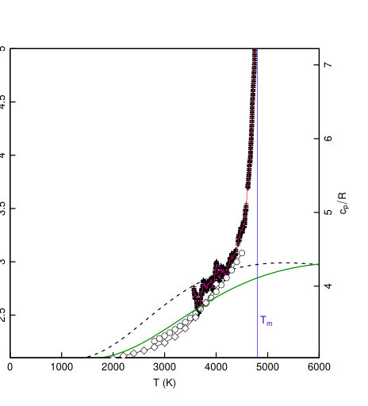
<figcaption class="paper-figure-caption"><b>Fig 1.</b> FIG. 1. Excessive specific heat in graphite. Symbols stand for experimental data (⋄-[3],◦-[4],+-[5]), curves depict Eq.1 with different Ea (dashed line – Ea = 1.16 eV, solid – 1.45 eV) and Qa = 3. Tm marks melting temperature of graphite according to experimental data[5, 6].</figcaption>
</figure>
<figure class="paper-figure-card">
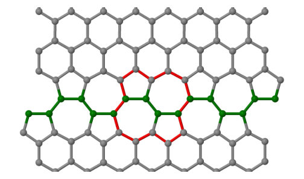
<figcaption class="paper-figure-caption"><b>Fig 2.</b> FIG. 2. Single extended defect (marked in green) in graphene obtained by reconstruction of interatomic bonds with forma- tion of 5- and 7-membered cycles. It can be regarded as con- catenation of individual Stone-Wales defects (one of which is outlined in red).</figcaption>
</figure>
<figure class="paper-figure-card">
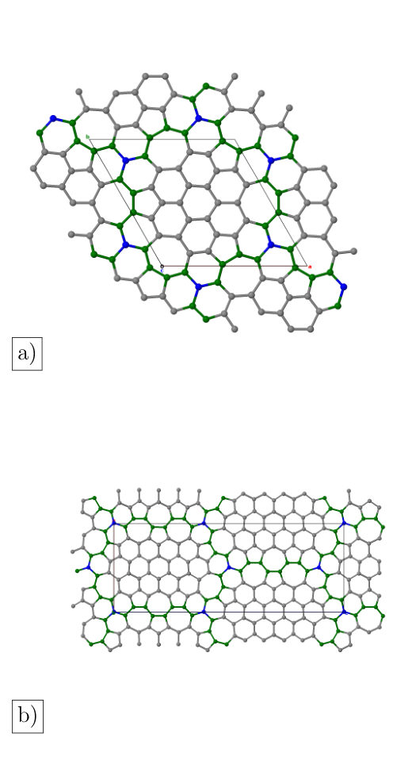
<figcaption class="paper-figure-caption"><b>Fig 3.</b> FIG. 3. Regular models of crossing of extended defects with different concentrations[12]. Green bonds depict network of defects , blue balls mark the point where the three defects meet, gray bonds connect area of unperturbed graphene.</figcaption>
</figure>
<figure class="paper-figure-card">
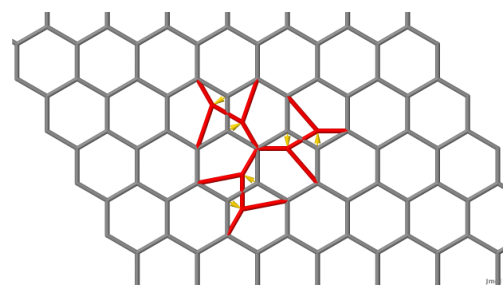
<figcaption class="paper-figure-caption"><b>Fig 4.</b> FIG. 4. Reconstruction of graphene bonds leading to for- mation of 1-1-1 Stone-Wales trefoil (shown in red). Gray bonds mark nearly unperturbed graphene. Yellow arrows show movements of carbon atoms in the process of bond re- construction.</figcaption>
</figure>
<figure class="paper-figure-card">
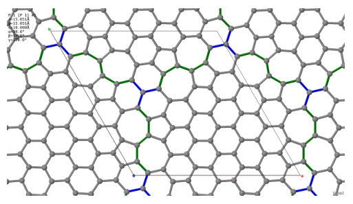
<figcaption class="paper-figure-caption"><b>Fig 5.</b> FIG. 6. 2-2-2 Stone-Wales trefoil as part of network of ex- tended defects.</figcaption>
</figure>
</div>

<p><strong>Summary.</strong> This theoretical study proposes the Stone-Wales trefoil as a novel topological defect in graphene to explain the anomalous high-temperature specific heat of graphite. Using DFT calculations, the authors determined that the formation energy of this extended defect structure yields an activation energy matching experimental measurements. This suggests that defect accumulation, rather than simple point defects, governs the material's thermal properties.</p>
<p><strong>Why it may be interesting.</strong> While focused on condensed matter defects, the study of defect energy landscapes and their influence on bulk material properties touches upon the physics of disorder, which is central to disordered systems research.</p>
<details>
<summary>Detailed structure</summary>
<p><strong>Main problem.</strong> The paper addresses the discrepancy between the measured specific heat of graphite at high temperatures and the theoretical Dulong-Petite law, attributing the deviation to accumulated defects.</p>
<p><strong>Main result.</strong> The authors propose the Stone-Wales trefoil as a new topological defect whose formation energy, when averaged across extended defect networks, matches the activation energy derived from fitting the experimental specific heat data.</p>
<p><strong>Method.</strong> Density Functional Theory (DFT) calculations were used to determine the formation energies of various extended topological defects in graphene.</p>
<p><strong>Model / system.</strong> The physical system is graphene/graphite, and the model focuses on extended topological defects, specifically proposing the Stone-Wales trefoil structure formed by the concatenation of smaller defects.</p>
<p><strong>Key observables.</strong> Specific heat ($c_p$), formation energy ($\Delta E$), and activation energy ($E_a$).</p>
<p><strong>Important parameters / regimes.</strong> The calculated activation energy ($E_d = 1.44$ eV) is compared directly to the experimental activation energy derived from the specific heat fit.</p>
<p><strong>Assumptions / limitations.</strong> The analysis assumes that the deviation in specific heat is solely due to the thermally activated formation and accumulation of these specific topological defects.</p>
<p><strong>Figures summary.</strong> Figures illustrate the comparison between experimental specific heat data and theoretical models, and show the structural evolution and relaxation of the proposed Stone-Wales trefoil defect.</p>
<p><strong>Paper structure.</strong> The paper first establishes the problem by analyzing the specific heat deviation. It then introduces the concept of extended defects, calculates the formation energies of various defect types (including the new trefoil), and finally correlates the calculated low activation energy with the experimental heat capacity data.</p>
</details>
<details>
<summary>Abstract</summary>
<p>Specific heat of graphite at high temperatures demonstrates significant deviation from the ``3R'' Dulong-Petite law. It can be explained by accumulation of defects with formation energy as low as 1.45 eV. Based on the density functional theory calculations, we propose a possible candidate of topological defects, whose energy is comparable to the growth activation energy.</p>
</details>
<p><sub><a href="#top">↑ back to top</a></sub></p>

<p><a id="paper-2610.13211"></a></p>
<h3 id="verifiable-sampling-for-delegated-generative-quantum-machine-learning"><a href="http://arxiv.org/abs/2610.13211v1">Verifiable Sampling for Delegated Generative Quantum Machine Learning</a></h3>
<p><strong>Authors:</strong> Matteo Inajetovic, Anna Pappa, Petros Wallden<br>
<strong>Type:</strong> theory · <strong>Category:</strong> quantum information and computing · <strong>PDF:</strong> <a href="https://arxiv.org/pdf/2610.13211v1">https://arxiv.org/pdf/2610.13211v1</a><br>
<strong>Analysis basis:</strong> full PDF text, analyzed in chunks
<strong>Topic relevance:</strong> <code>quantum measurements</code> <strong>1/5</strong></p>
<div class="figure-strip-hint">↔ Scroll figures horizontally</div>
<div class="paper-figures-scroll">
<figure class="paper-figure-card">
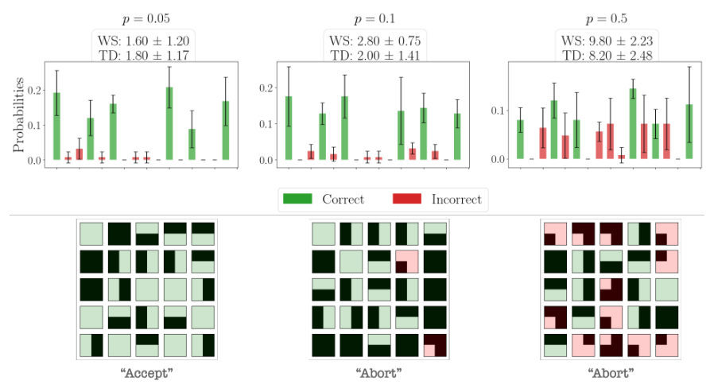
<figcaption class="paper-figure-caption"><b>Fig 1.</b> Fig. 1. Upper: d = 25, t = 50, 5 Repetitions. WS: Number of wrong generated samples. TD: Number of trap detections. p: probability to attack a round as defined in the main text. In the x-axis we have the 2n bitstrings samples where n is the number of bits. In green we highlight the correct samples belonging to the target distribution while in red the wrong ones. Bottom: Visualization of one of the runs from the upper figure experiment.</figcaption>
</figure>
</div>

<p><strong>Summary.</strong> This paper presents a novel, blind, and verifiable protocol for sampling from Quantum Generative Models when the computation is outsourced to a remote quantum server. It achieves security by combining techniques from blind quantum computing with trapification to detect malicious corruption. Crucially, the protocol moves beyond a simple pass/fail check by estimating the precise fraction of corrupted samples, offering a quantitative quality assessment for delegated quantum tasks.</p>
<p><strong>Why it may be interesting.</strong> While focused on quantum computation security, the rigorous error bounding techniques and the development of quantifiable quality metrics ($\gamma$ estimation) are highly relevant for any quantum algorithm implementation where noise or adversarial attacks are a concern.</p>
<details>
<summary>Detailed structure</summary>
<p><strong>Main problem.</strong> The paper addresses the challenge of securely delegating the sampling phase of Quantum Generative Models (QGMs) to a remote quantum server while ensuring verifiability against malicious behavior.</p>
<p><strong>Main result.</strong> They propose a blind and verifiable sampling protocol that not only detects malicious corruption but also provides a fine-grained estimation of the exact amount of corrupted samples, $\gamma$.</p>
<p><strong>Method.</strong> The protocol combines principles from Universal Blind Quantum Computing and utilizes trapification schemes to achieve verifiability, allowing for error bounding based on distance metrics like MMD, TVD, and DKL.</p>
<p><strong>Model / system.</strong> The work focuses on Quantum Generative Models (QGMs) used for generating complex distributions, building upon concepts from Quantum Circuit Born Machines (QCBMs) and general quantum computation graphs.</p>
<p><strong>Key observables.</strong> The key observables include the estimated corrupted sample ratio ($\gamma$), trap detections (TD), and the resulting confidence interval $[\gamma_l, \gamma_u]$ for the true corruption rate.</p>
<p><strong>Important parameters / regimes.</strong> Key parameters include the number of computation rounds ($d$), test rounds ($t$), and the maximum tolerable corruption ratio ($\gamma_{\max}$).</p>
<p><strong>Assumptions / limitations.</strong> The analysis assumes the existence of a suitable distance function $L$ allowing for linear factorization in $\gamma$, and for verifiable optimization, it assumes all gradient evaluations share the same MBQC graph.</p>
<p><strong>Figures summary.</strong> Figure 1 illustrates the correlation between trap detections and wrong samples, while Table I presents numerical results for delegated inference under a Malicious Noise Model Attack.</p>
<p><strong>Paper structure.</strong> The paper first introduces the need for secure delegation for QGMs, then details the Verifiable Sampling Protocol (Protocol 2) for inference, and finally extends this framework to provide verifiable end-to-end training for QGMs.</p>
</details>
<details>
<summary>Abstract</summary>
<p>Generative machine learning has shown remarkable results across a wide range of interdisciplinary tasks, motivating significant efforts toward Quantum Generative Models as a path to beyond-classical performance, given their capability of generating classically intractable distributions. However, comparatively little attention has been paid to securely delegating such computations to a powerful remote quantum server. In this work, we propose a blind and verifiable protocol for sampling that can be used for the inference phase of such quantum models. Such a protocol inherits blindness from Universal Blind Quantum Computing and achieves verifiability by exploiting known approaches based on trapification schemes. Alongside, to delegate the training phase, we discuss an extension of the previously proposed verifiable end-to-end Delegated Variational Quantum Algorithms (Inajetovic et al., Phys. Rev. Research, 2026).   Beyond the usual Accept/Abort outcome characterizing verification protocols, the sampling protocol for inference also provides, even against a malicious server, an estimation of the amount of corrupted generated samples, i.e., a fine-grained feature describing the quality of the outcome connecting verification protocols and application-level benchmarking.</p>
</details>
<p><sub><a href="#top">↑ back to top</a></sub></p>
<h2 id="other-papers-25">Other papers (25)</h2>
<p><em>Papers from primary archives without highlighted authors or any topic match. Click to expand.</em></p>
<details>
<summary>Show other papers</summary>

<p><a id="paper-2610.13899"></a></p>
<h3 id="math670math-deformed-weil-petersson-volumes-from-the-spectral-edge-of-dssyk-and-supersymmetric-extensions"><a href="http://arxiv.org/abs/2610.13899v1">$q$-deformed Weil-Petersson Volumes from the Spectral Edge of DSSYK and Supersymmetric Extensions</a></h3>
<p><strong>Authors:</strong> Wasif Ahmed, Joydeep Naskar, Krishan Saraswat<br>
<strong>Type:</strong> theory · <strong>Category:</strong> strongly correlated electrons · <strong>PDF:</strong> <a href="https://arxiv.org/pdf/2610.13899v1">https://arxiv.org/pdf/2610.13899v1</a><br>
<strong>Analysis basis:</strong> full PDF text, analyzed in chunks</p>
<div class="figure-strip-hint">↔ Scroll figures horizontally</div>
<div class="paper-figures-scroll">
<figure class="paper-figure-card">
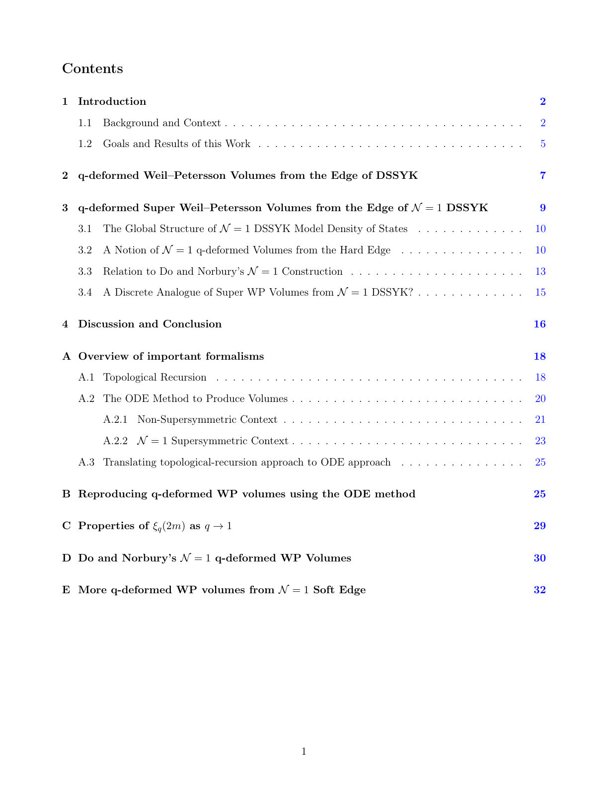
<figcaption class="paper-figure-caption"><b>Fig 1.</b> Low-resolution page preview, page 2</figcaption>
</figure>
<figure class="paper-figure-card">
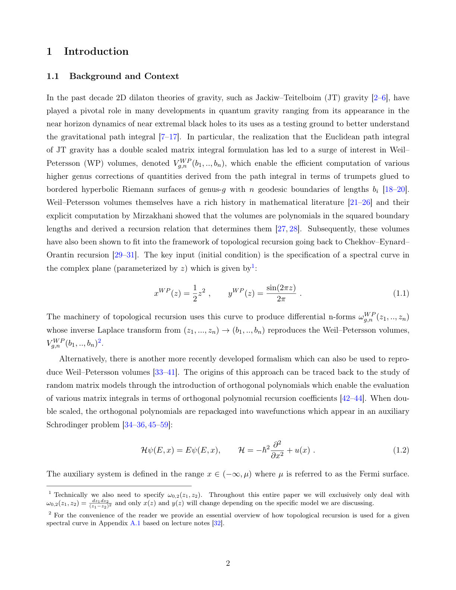
<figcaption class="paper-figure-caption"><b>Fig 2.</b> Low-resolution page preview, page 3</figcaption>
</figure>
<figure class="paper-figure-card">
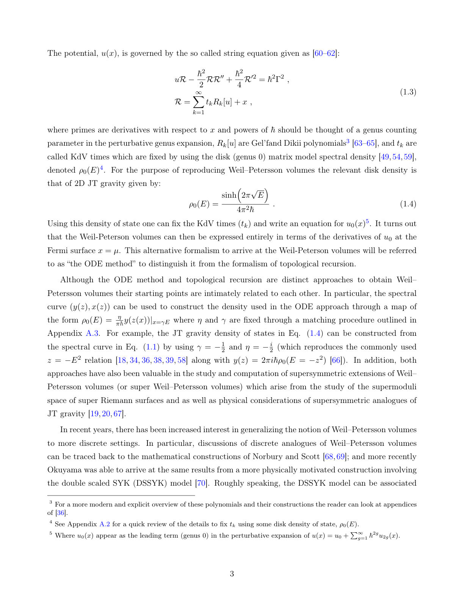
<figcaption class="paper-figure-caption"><b>Fig 3.</b> Low-resolution page preview, page 4</figcaption>
</figure>
<figure class="paper-figure-card">
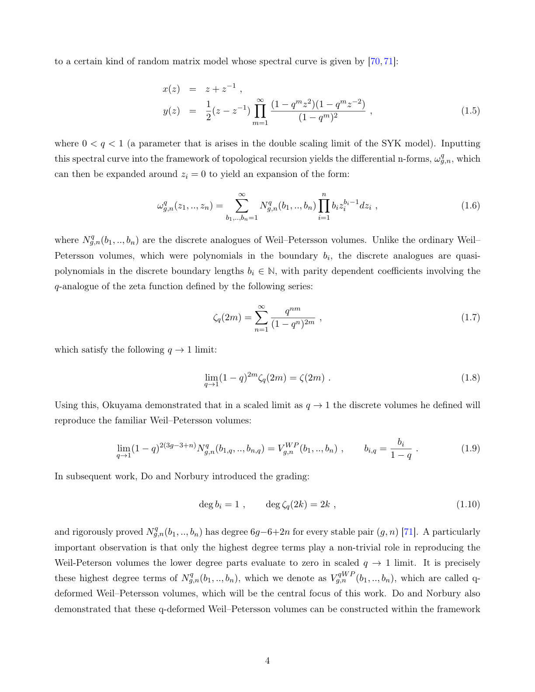
<figcaption class="paper-figure-caption"><b>Fig 4.</b> Low-resolution page preview, page 5</figcaption>
</figure>
<figure class="paper-figure-card">
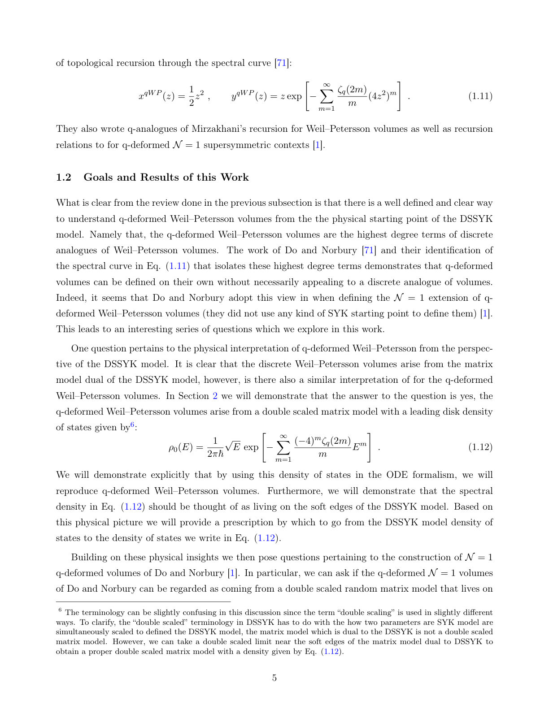
<figcaption class="paper-figure-caption"><b>Fig 5.</b> Low-resolution page preview, page 6</figcaption>
</figure>
</div>
<p><strong>Summary.</strong> This theoretical paper calculates $q$-deformed Weil-Petersson volumes by analyzing the spectral edges of the Double-scaled SYK (DSSYK) model. It successfully extends this methodology to supersymmetric $\mathcal{N}=1$ systems, demonstrating that these volumes arise naturally from the model's density of states in specific scaling limits. This provides a powerful, unified framework connecting random matrix theory, quantum gravity, and quantum field theory.</p>
<p><strong>Why it may be interesting.</strong> The connection between geometric invariants (WP volumes) and the spectral properties of complex quantum many-body models like SYK provides deep insights into the structure of quantum gravity and random matrix theory, which often informs condensed matter theories.</p>
<details>
<summary>Detailed structure</summary>
<p><strong>Main problem.</strong> The paper aims to determine $q$-deformed Weil-Petersson (WP) volumes, particularly extending the analysis to supersymmetric $\mathcal{N}=1$ extensions.</p>
<p><strong>Main result.</strong> The authors show that $q$-deformed WP volumes can be derived from the spectral edges of the Double-scaled SYK (DSSYK) model, providing a systematic way to construct these volumes in supersymmetric contexts.</p>
<p><strong>Method.</strong> The approach combines topological recursion, the ODE method, and analyzing scaling limits (e.g., $q 	o 1$) applied to the density of states derived from the DSSYK model.</p>
<p><strong>Model / system.</strong> The primary model is the Double-scaled SYK (DSSYK) model, which is used to generate spectral curves and density of states. The analysis extends this to $\mathcal{N}=1$ supersymmetric extensions.</p>
<p><strong>Key observables.</strong> Weil-Petersson volumes ($V_{WP}$), $q$-deformed WP volumes ($V_{qWP}$), and the spectral density $
ho_0(E)$.</p>
<p><strong>Important parameters / regimes.</strong> The deformation parameter $q$, the scaling limit $q 	o 1$, and the boundary conditions (soft vs. hard edges).</p>
<p><strong>Assumptions / limitations.</strong> The results rely on identifying the top-degree parts of discrete volumes and assuming that the spectral edge analysis correctly captures the geometric invariants.</p>
<p><strong>Paper structure.</strong> The paper builds by first establishing the connection between $q$-deformed volumes and the DSSYK spectral curve, then applying this framework to the soft and hard edges of the $N=1$ DSSYK model to derive candidate super WP volumes.</p>
</details>
<details>
<summary>Abstract</summary>
<p>The $q$-deformed Weil-Petersson volumes of Do and Norbury are the top-degree parts of Okuyama's discrete volumes, which are defined by topological recursion on the spectral curve of the double-scaled SYK (DSSYK) model. We show that the same q-deformed volumes can be obtained from a double-scaled matrix model whose disk density is found by zooming in on the soft edges of the DSSYK density. Applying the same procedure to the hard edge of $\mathcal{N}=1$ DSSYK, we obtain candidate $q$-deformed $\mathcal{N}=1$ super Weil-Petersson volumes. They are polynomials of fixed degree, and they reduce to the $\mathcal{N}=1$ super Weil-Petersson volumes in a scaled $q\to1$ limit. These candidate volumes differ from the $\mathcal{N}=1$ volumes of Do and Norbury in (arXiv:2510.12431) up to what we call "irrelevant" contributions which exactly vanish in the scaled $q\to 1$ limit. Together, these results demonstrate how q-deformed volumes can be naturally associated to the spectral edges of various DSSYK models and provides an intuitive way to construct them in supersymmetric contexts.</p>
</details>
<p><sub><a href="#top">↑ back to top</a></sub></p>

<p><a id="paper-2610.13349"></a></p>
<h3 id="a-general-method-for-extending-isoscattering-non-isospectral-quantum-graphs"><a href="http://arxiv.org/abs/2610.13349v1">A General Method for Extending Isoscattering Non-Isospectral Quantum Graphs</a></h3>
<p><strong>Authors:</strong> Omer Farooq, Michal Lawniczak, Leszek Sirko<br>
<strong>Type:</strong> theory · <strong>Category:</strong> other · <strong>PDF:</strong> <a href="https://arxiv.org/pdf/2610.13349v1">https://arxiv.org/pdf/2610.13349v1</a><br>
<strong>Analysis basis:</strong> full PDF text, analyzed in chunks</p>
<div class="figure-strip-hint">↔ Scroll figures horizontally</div>
<div class="paper-figures-scroll">
<figure class="paper-figure-card">
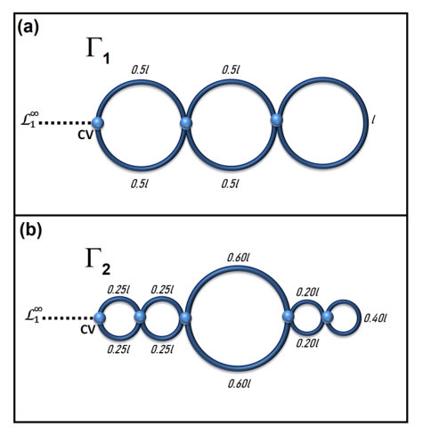
<figcaption class="paper-figure-caption"><b>Fig 1.</b> FIG. 1. (a) Graphs Γ1 and (b) Γ2 considered in Case 1. The bond lengths are given in units of l.</figcaption>
</figure>
<figure class="paper-figure-card">
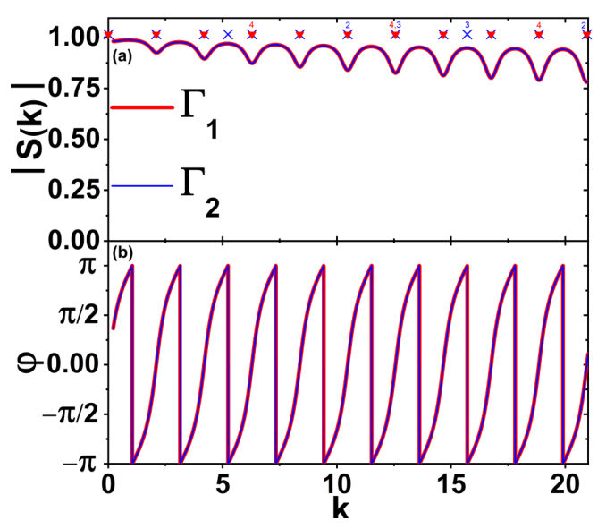
<figcaption class="paper-figure-caption"><b>Fig 2.</b> FIG. 2. (a) The modulus |S(k)| and (b) the phase φ(k) of the scattering matrices calculated for the</figcaption>
</figure>
<figure class="paper-figure-card">
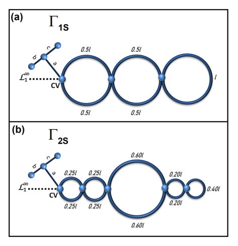
<figcaption class="paper-figure-caption"><b>Fig 3.</b> FIG. 3. (a) Graphs Γ1S and (b) Γ2S considered in Case 2. The graphs are obtained from Γ1 and</figcaption>
</figure>
<figure class="paper-figure-card">
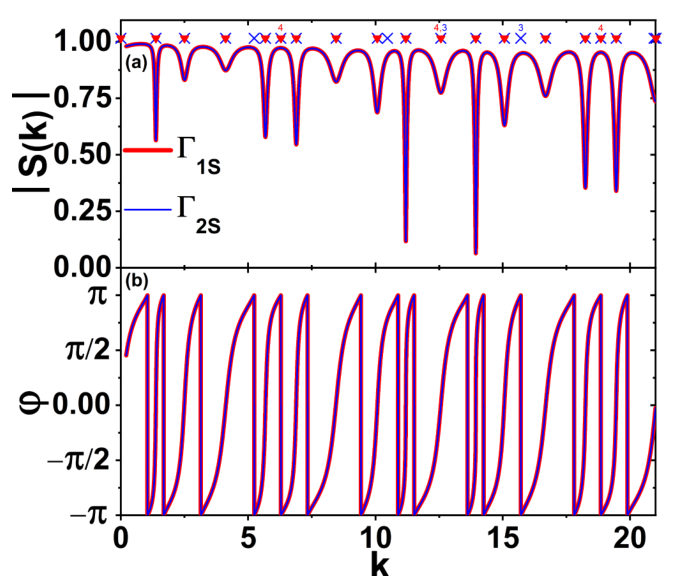
<figcaption class="paper-figure-caption"><b>Fig 4.</b> FIG. 4. (a) The modulus |S(k)| and (b) the phase φ(k) of the scattering matrices calculated for</figcaption>
</figure>
</div>
<p><strong>Summary.</strong> This paper presents a general method to extend quantum graphs that are isoscattering (identical scattering matrices) but non-isospectral (different energy spectra). By analyzing two initial graphs, the authors demonstrate this property and then prove that attaching a standard star graph preserves this intriguing relationship in the extended system.</p>
<p><strong>Why it may be interesting.</strong> This work is highly relevant to the study of open quantum systems and wave propagation on complex structures, providing a rigorous mathematical framework for understanding how local changes (like adding a star graph) affect global spectral and scattering properties.</p>
<details>
<summary>Detailed structure</summary>
<p><strong>Main problem.</strong> To develop a general mathematical method for extending quantum graphs that exhibit the property of being isoscattering but non-isospectral.</p>
<p><strong>Main result.</strong> The authors successfully demonstrated that the initial pair of graphs ($\Gamma_1, \Gamma_2$) are isoscattering but non-isospectral, and this property is preserved when extending both graphs by affixing an identical star graph ($\Gamma_S$).</p>
<p><strong>Method.</strong> The analysis relies on the Titchmarsh-Weyl M-function formalism for graph gluing and comparing spectral properties (eigenvalues, Euler characteristic) against scattering matrix calculations.</p>
<p><strong>Model / system.</strong> The system under study is quantum graphs, which are metric graphs governed by a self-adjoint Laplace operator. The model involves comparing two graphs ($\Gamma_1, \Gamma_2$) with the same length but different topologies, and then extending them by attaching a star graph ($\Gamma_S$) at a contact vertex.</p>
<p><strong>Key observables.</strong> Scattering matrix ($S(k)$), eigenvalues ($k_n$), multiplicities ($m_n$), and the Euler characteristic ($\chi(\Gamma)$).</p>
<p><strong>Important parameters / regimes.</strong> Total metric length ($L$), coupling constants, and the structure of the attached star graph ($\Gamma_S$).</p>
<p><strong>Assumptions / limitations.</strong> The analysis assumes the validity of the Titchmarsh-Weyl M-function formalism for characterizing scattering properties upon graph extension.</p>
<p><strong>Figures summary.</strong> Figure 1 illustrates the topologies of the initial graphs ($\Gamma_1$ and $\Gamma_2$). Figure 2 confirms the equality of the scattering matrices ($S_{\Gamma_1}(k) = S_{\Gamma_2}(k)$). Figure 3 shows the construction of the extended graphs ($\Gamma_{1S}$ and $\Gamma_{2S}$).</p>
<p><strong>Paper structure.</strong> The paper first establishes the initial non-isospectral, isoscattering pair ($\Gamma_1, \Gamma_2$) using spectral and scattering analysis. It then introduces the extension procedure by attaching a star graph ($\Gamma_S$) and proves, using the M-function formalism, that the resulting extended graphs ($\Gamma_{1S}, \Gamma_{2S}$) retain both the isoscattering and non-isospectral characteristics.</p>
</details>
<details>
<summary>Abstract</summary>
<p>The present paper sets out a general method for extending the isoscattering, non-isospectral quantum graphs. The methodology is illustrated by considering two graphs, denoted by $Γ_1$ and $Γ_2$, which have the same total metric length but different topologies. It is demonstrated that, despite the fact that their scattering matrices are identical, their eigenvalues, denoted by $k_n$, and Euler characteristics differ from one another. The next step in the process is to extend both graphs by affixing the same star graph to each of them. Utilising the Titchmarsh-Weyl M-function formalism, it is proven that the newly constructed, extended graphs are also isoscattering and non-isospectral.</p>
</details>
<p><sub><a href="#top">↑ back to top</a></sub></p>

<p><a id="paper-2610.13584"></a></p>
<h3 id="altermagnetic-control-of-charge-4e-superconductivity"><a href="http://arxiv.org/abs/2610.13584v1">Altermagnetic Control of Charge-4e Superconductivity</a></h3>
<p><strong>Authors:</strong> Yan-Guang Yue, Jie Lou, Yan Chen<br>
<strong>Type:</strong> theory · <strong>Category:</strong> statistical mechanics · <strong>PDF:</strong> <a href="https://arxiv.org/pdf/2610.13584v1">https://arxiv.org/pdf/2610.13584v1</a><br>
<strong>Analysis basis:</strong> full PDF text, analyzed in chunks</p>
<div class="figure-strip-hint">↔ Scroll figures horizontally</div>
<div class="paper-figures-scroll">
<figure class="paper-figure-card">
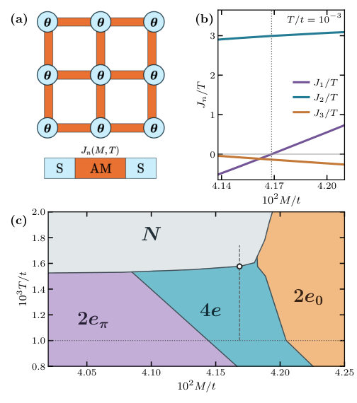
<figcaption class="paper-figure-caption"><b>Fig 1.</b> FIG. 1. Altermagnetic control of the coherent charge sec- tor. (a) Conventional superconducting islands (blue) con- nected through altermagnetic links (orange); one S/AM/S junction is shown below. (b) Leading microscopic energy har- monics at T/t = 10−3; the network retains the converged harmonic spectrum. (c) Phase map: 2eπ, 4e, 2e0, and N denote staggered ordinary, independent composite, uniform ordinary, and normal regimes. Interfaces interpolate between supported finite-size assignments. The horizontal and vertical lines mark the representative temperature and fixed-M∗cuts; the white point marks the large-size BKT estimate. Here M∗ is defined by J1(M∗, 10−3t) = 0.</figcaption>
</figure>
<figure class="paper-figure-card">
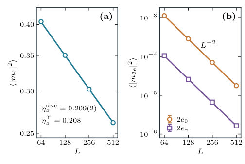
<figcaption class="paper-figure-caption"><b>Fig 2.</b> FIG. 2. Independent composite coherence at M = M∗, T/t = 1.55 × 10−3. (a) The composite moment decays alge- braically for L = 64, 128, 256, 512; its effective exponent from L = 256, 512 agrees with the stiffness estimate at L = 512. (b) Both uniform and staggered ordinary moments scale as L−2, consistent with finite ordinary structure factors. Lines show the corresponding powers; error bars are smaller than several symbols.</figcaption>
</figure>
<figure class="paper-figure-card">
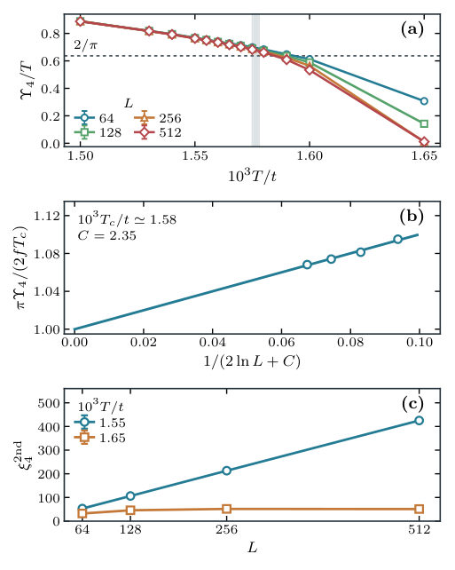
<figcaption class="paper-figure-caption"><b>Fig 3.</b> FIG. 3. Thermal loss of composite coherence at fixed M = M∗. (a) Composite-phase stiffness Υ4/T; the horizontal line is 2/π, and the band marks the working transition interval. (b) Leading logarithmic finite-size fit, including the square-torus factor f. The universal jump is a theoretical input to this fit. (c) The second-moment composite correlation length ξ4 grows with L below the transition and saturates at T/t = 1.65 × 10−3. Fit variants and winding-sector sampling limitations are reported in the SM.</figcaption>
</figure>
<figure class="paper-figure-card">
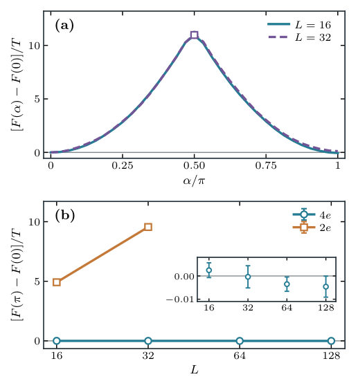
<figcaption class="paper-figure-caption"><b>Fig 4.</b> FIG. 4. Half-flux response at T/t = 10−3. (a) Physical twist free energies at M = M∗for L = 16, 32, obtained by thermodynamic integration. The points at α = π/2 use a refined integration grid. (b) Independent π-twist costs: the charge-4e phase remains compatible with zero through L = 128 (inset), while the ordinary control at M/t = 4.21 × 10−2</figcaption>
</figure>
</div>
<p><strong>Summary.</strong> This theoretical work demonstrates that coupling conventional superconductors through altermagnetic junctions allows for the creation and control of an independent charge-4e superconducting phase. By tuning the altermagnetic splitting, the system can be driven into this state, which is characterized by unique algebraic coherence and a BKT-type thermal transition. This establishes altermagnetism as a powerful tool for selecting specific superconducting coherence orders.</p>
<p><strong>Why it may be interesting.</strong> The explicit control over higher-order superconducting coherence (charge-4e) using magnetic order parameters (altermagnetism) provides a novel mechanism for engineering superconducting ground states, relevant to understanding exotic pairing symmetries.</p>
<details>
<summary>Detailed structure</summary>
<p><strong>Main problem.</strong> The paper aims to theoretically establish and characterize an independent charge-4e superconducting phase in a novel superconducting junction system.</p>
<p><strong>Main result.</strong> The authors show that altermagnetism can microscopically tune the system to stabilize a charge-4e phase, which exhibits distinct algebraic coherence and undergoes a Berezinskii-Kosterlitz-Thouless (BKT) type thermal transition.</p>
<p><strong>Method.</strong> The analysis involves calculating the temperature-dependent Josephson spectrum, analyzing the structure factor for different coherence channels, and applying BKT scaling analysis to diagnose the phase transition.</p>
<p><strong>Model / system.</strong> The model is a two-dimensional classical array of conventional superconductors coupled via altermagnetic junctions (S/AM/S). The physics is governed by an effective phase Hamiltonian involving multiple Josephson coupling harmonics.</p>
<p><strong>Key observables.</strong> Composite correlation function $C_{4e}(r)$, decay exponent $\eta_4$, and the composite-phase stiffness $\Upsilon_4$.</p>
<p><strong>Important parameters / regimes.</strong> The altermagnetic splitting $M$ acts as the primary tuning parameter, controlling the transition between $2e_\pi$, $4e$, and $2e_0$ states.</p>
<p><strong>Assumptions / limitations.</strong> The analysis assumes a classical, unscreened network description is applicable for the superconducting array.</p>
<p><strong>Figures summary.</strong> Figures illustrate the phase diagram controlled by $M$, and show scaling behavior of the composite-phase stiffness ($\Upsilon_4/T$) and correlation length ($\xi_4$) consistent with a BKT transition.</p>
<p><strong>Paper structure.</strong> The paper proceeds by first defining the physical system and the role of altermagnetism in controlling superconducting coherence. It then uses microscopic calculations to identify the charge-4e phase via correlation functions and finally confirms the phase stability and transition nature using BKT scaling and flux response measurements.</p>
</details>
<details>
<summary>Abstract</summary>
<p>We present, to our knowledge, the first theoretical realization of an independent charge-4e phase in a two-dimensional classical array of conventional superconductors coupled through altermagnetic junctions. Tuning the altermagnetic splitting suppresses the leading single-pair tunneling harmonic while retaining strong double-pair coupling, producing a finite charge-4e region between staggered and uniform charge-2e states. Using the complete temperature-dependent microscopic Josephson spectrum, we find short-range ordinary pair correlations alongside algebraic coherence of pairs of Cooper pairs. Berezinskii--Kosterlitz--Thouless scaling and a half-flux response further identify the charge-4e phase. Our results establish altermagnetism as a microscopic means to select between ordinary and composite superconducting coherence.</p>
</details>
<p><sub><a href="#top">↑ back to top</a></sub></p>

<p><a id="paper-2610.13882"></a></p>
<h3 id="an-annealing-based-quantum-neural-network-with-discrete-wavelet-transforms-for-enhanced-air-pollution-nowcasting"><a href="http://arxiv.org/abs/2610.13882v1">An Annealing-based Quantum Neural Network with Discrete Wavelet Transforms for Enhanced Air Pollution Nowcasting</a></h3>
<p><strong>Authors:</strong> Otto Menegasso Pires, André Saimon, Daniela Herrmann, Prashant Kumar, Marcelo Moret, Erick Giovani Sperandio Nascimento<br>
<strong>Type:</strong> both · <strong>Category:</strong> disordered systems and neural networks · <strong>PDF:</strong> <a href="https://arxiv.org/pdf/2610.13882v1">https://arxiv.org/pdf/2610.13882v1</a><br>
<strong>Analysis basis:</strong> full PDF text, analyzed in chunks</p>
<div class="figure-strip-hint">↔ Scroll figures horizontally</div>
<div class="paper-figures-scroll">
<figure class="paper-figure-card">
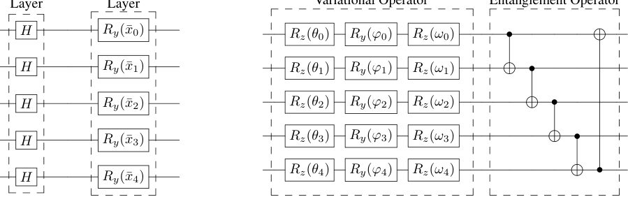
<figcaption class="paper-figure-caption"><b>Fig 1.</b> Figure 1: The feature map (a) is composed of a Superposition Layer and an Angle Encoding Layer, allocating one qubit for each feature within the dataset. During the encoding procedure, the circuit applies a rotation gate to each qubit j, with the rotation angle dictated by the parameterized value ¯xj corresponding to the normalized specific feature. The ansatz (b) of our quantum neural network model is defined by a variational operator parametrized by the vectors θ, φ, ω followed by a circular entanglement scheme as our entanglement operator. We define the circuit depth as the number of repetitions of the ansatz. Consequently, a model with depth-2 concatenates two identical blocks, each...</figcaption>
</figure>
<figure class="paper-figure-card">
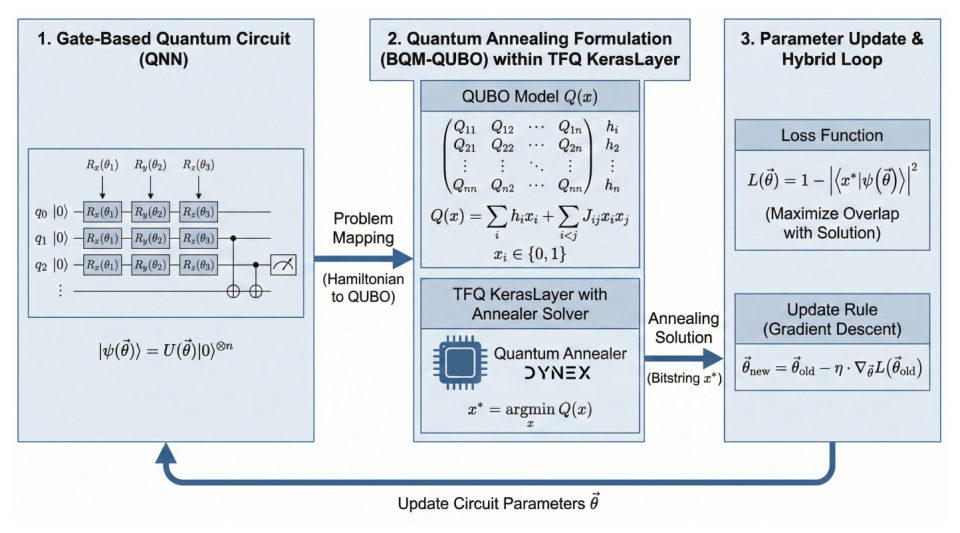
<figcaption class="paper-figure-caption"><b>Fig 2.</b> Figure 2: Schematic of the DynexQML Framework for Hybrid Quantum-Classical Machine Learning. The framework integrates a gate-based QNN with neuromorphic quantum annealing emulation for scalable training. Steps: 1. The process begins with a gate-based quantum circuit; 2. This circuit is mapped to a QUBO problem, represented by a Hamiltonian Q(x). The problem is embedded within a QKerasLayer and solved on the Dynex neuromorphic platform, which emulates quantum annealing to find the ground state x∗= arg minx Q(x); 3. The annealing solution (bitstring x∗) is used to compute a loss function L(θ) based on the overlap with the target state. Circuit parameters θ are then updated via gradient...</figcaption>
</figure>
<figure class="paper-figure-card">
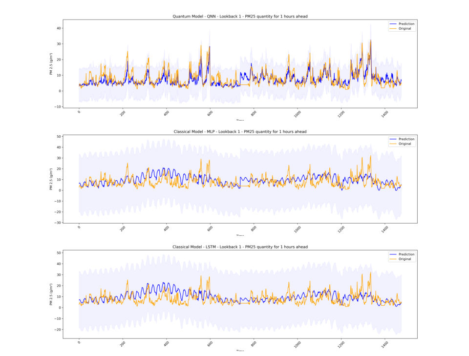
<figcaption class="paper-figure-caption"><b>Fig 3.</b> Figure 3: Time series plots illustrating the performance of the proposed QNN model with depth 2 and lookback 1 in forecasting PM2.5 concentrations (g/m3) in comparison with the classical baseline models. These results were obtained by training the models with the base dataset, without wavelets. From top to bottom, QNN, MLP, LSTM. In all panels, the blue line represents the model’s prediction, and the orange line represents the original (observed) PM2.5 data from the test set. The shaded light blue region indicates the 95% prediction interval, derived using quantile regression, representing the range within which future predicted values are expected to fall with 95% probability.</figcaption>
</figure>
</div>
<p><strong>Summary.</strong> This work proposes an annealing-based Quantum Neural Network (QNN) combined with Wavelet Transforms to forecast air pollution (PM2.5). By leveraging a neuromorphic quantum platform, the QNN demonstrates superior predictive accuracy compared to classical deep learning models on complex environmental data. This establishes a benchmark for applying scalable quantum machine learning to critical, non-linear real-world scientific challenges.</p>
<p><strong>Why it may be interesting.</strong> The application of quantum annealing to solve a complex, non-linear, real-world data problem like environmental forecasting provides a concrete, albeit simulated, testbed for quantum machine learning utility beyond abstract quantum chemistry simulations.</p>
<details>
<summary>Detailed structure</summary>
<p><strong>Main problem.</strong> The paper addresses the critical global health threat posed by air pollution, specifically forecasting fine particulate matter (PM2.5) concentrations (nowcasting).</p>
<p><strong>Main result.</strong> The proposed Quantum Neural Network (QNN) framework significantly outperforms classical deep learning baselines (MLP, LSTM) on raw, high-entropy environmental data, achieving state-of-the-art predictive fidelity.</p>
<p><strong>Method.</strong> A hybrid framework integrating variational quantum circuits with quantum annealing is used, enhanced by Discrete Wavelet Transforms for feature decomposition.</p>
<p><strong>Model / system.</strong> The model is built on a neuromorphic quantum computing platform (DynexQML), encoding the problem into an energy minimization framework solved via quantum annealing to simulate a QNN structure.</p>
<p><strong>Key observables.</strong> Normalized Mean Square Error (NMSE) and Pearson's R correlation coefficient are used to quantify predictive performance.</p>
<p><strong>Important parameters / regimes.</strong> The model was successfully scaled and tested up to 172 qubits, with trainable parameters including variational angles ($    heta, \phi, \omega$) and model depth ($L$).</p>
<p><strong>Assumptions / limitations.</strong> The performance is demonstrated on an emulated platform, meaning true physical quantum advantage over noise and decoherence has not been validated.</p>
<p><strong>Figures summary.</strong> Figures illustrate the QNN structure (Feature Map and Ansatz) and time series comparisons showing QNN predictions versus classical models, including 95% prediction intervals.</p>
<p><strong>Paper structure.</strong> The paper introduces the problem, details the QNN architecture (encoding, ansatz, output), explains the quantum annealing mapping (circuit to QUBO), validates the method against classical models using statistical tests, and concludes with performance metrics and future work.</p>
</details>
<details>
<summary>Abstract</summary>
<p>Air pollution poses a significant threat to public health, exacerbated by the rapid industrialization and urbanization of modern society. While traditional deep learning offers predictive capabilities, recent advancements in quantum machine learning (QML) present a compelling alternative. Here, we introduce a scalable hybrid framework that integrates variational quantum circuits with quantum annealing. Leveraging a neuromorphic quantum computing platform to transcend the qubit limitations of the NISQ era, we model particulate matter (PM$_{2.5}$) dynamics using high-density urban data from the UK. We demonstrate that our Quantum Neural Networks (QNNs) exhibit an intrinsic resilience to input volatility, significantly outperforming classical baselines (MLP and LSTM) on raw, high-entropy environmental data. Furthermore, we successfully scaled the model to 172 qubits, observing a synergistic enhancement when coupled with wavelet decomposition that achieves state-of-the-art predictive fidelity. These findings establish a critical benchmark for quantum utility, proving that scalable, neuromorphic quantum machine learning can now address complex, non-linear real-world problems.</p>
</details>
<p><sub><a href="#top">↑ back to top</a></sub></p>

<p><a id="paper-2610.13228"></a></p>
<h3 id="block-encoding-of-semiseparable-matrices-via-their-generators"><a href="http://arxiv.org/abs/2610.13228v1">Block encoding of semiseparable matrices via their generators</a></h3>
<p><strong>Authors:</strong> Giacomo Antonioli, Gianna M. Del Corso, Roel Van Beeumen<br>
<strong>Type:</strong> theory · <strong>Category:</strong> quantum information and computing · <strong>PDF:</strong> <a href="https://arxiv.org/pdf/2610.13228v1">https://arxiv.org/pdf/2610.13228v1</a><br>
<strong>Analysis basis:</strong> full PDF text, analyzed in chunks</p>
<div class="figure-strip-hint">↔ Scroll figures horizontally</div>
<div class="paper-figures-scroll">
<figure class="paper-figure-card">
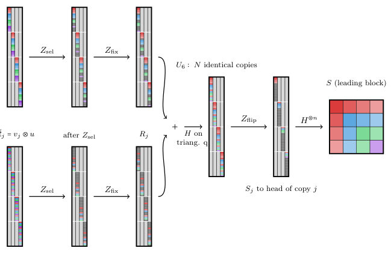
<figcaption class="paper-figure-caption"><b>Fig 1.</b> Fig. 5.1: Construction of the block encoding of a 4 × 4 semiseparable matrix, shown on its first N = 4 columns. Colour encodes the u-index a = min(i,j) and shade the v-index b = max(i,j). Left, top and bottom rows: from ̃Lj = uj ⊗v and ̃Rj = vj ⊗u, the shifts Zsel and Zfix produce the lower/upper triangular columns Lj, Rj (background gray = zero, faded = discarded amplitudes). Right column: the Hadamard on the triangular qubit adds the branches, so each of the N identical copies now stacks all columns S0,...,SN−1 (U6); Zflip moves Sj to the head of the j-th copy (the four columns become distinct; faded = amplitudes later discarded); finally H⊗n superposes the copies and places S in the...</figcaption>
</figure>
<figure class="paper-figure-card">
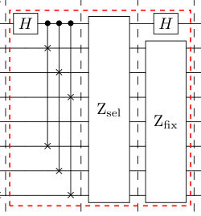
<figcaption class="paper-figure-caption"><b>Fig 2.</b> Fig. 5.2: The circuit for the block encoding of a symmetric semiseparable matrix S(u,v)</figcaption>
</figure>
<figure class="paper-figure-card">
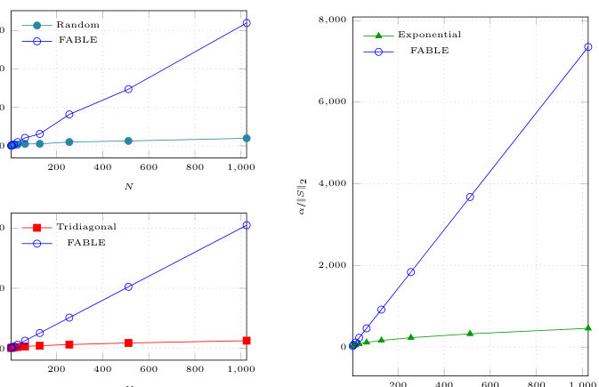
<figcaption class="paper-figure-caption"><b>Fig 3.</b> Fig. 7.1: Comparison of the subnormalization ratio r(N) = α/∥S∥2 between our method and FABLE, for different generator-pair types (one per plot).</figcaption>
</figure>
<figure class="paper-figure-card">
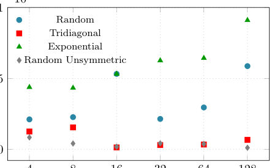
<figcaption class="paper-figure-caption"><b>Fig 4.</b> Fig. 8.1: Correctness of the encoding. For different testing models and different matrix size we report the error of the encoding assuming the generators correct up to machine precision. We see that the absolute error is O(10−15), comparable with the expected theoretical error.</figcaption>
</figure>
<figure class="paper-figure-card">
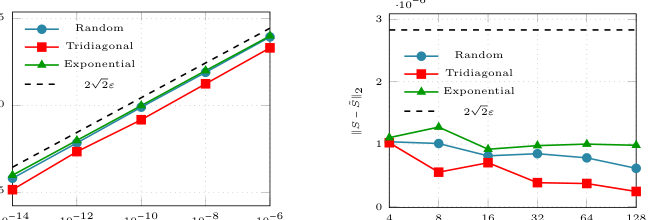
<figcaption class="paper-figure-caption"><b>Fig 5.</b> Fig. 8.2: Semiseparable reconstruction error scaling: sensitivity to ε (left) and N (right).</figcaption>
</figure>
</div>
<p><strong>Summary.</strong> This paper presents a novel, highly efficient quantum circuit for block-encoding semiseparable matrices by utilizing only the two generators that define them. By employing techniques based on cyclic shifts and the square-and-multiply principle, the authors achieve polylogarithmic circuit depth, demonstrating a significant quantum advantage over general encoding schemes for structured quantum data.</p>
<p><strong>Why it may be interesting.</strong> This work provides a concrete example of how exploiting underlying mathematical structure (generator representation) in quantum data encoding can lead to an exponential quantum advantage in circuit complexity over general-purpose methods.</p>
<details>
<summary>Detailed structure</summary>
<p><strong>Main problem.</strong> The paper aims to develop an explicit and highly efficient quantum circuit to construct a block encoding for semiseparable matrices directly from their defining generators.</p>
<p><strong>Main result.</strong> They achieve a block encoding with $O(	ext{polylog } N)$ depth, significantly outperforming previous methods whose complexity scaled polynomially or quadratically with the matrix dimension $N$.</p>
<p><strong>Method.</strong> The core method involves constructing the circuit using fundamental gates (cyclic shifts, swaps, Hadamard) and leveraging the algebraic structure of the generators via a 'square-and-multiply' principle.</p>
<p><strong>Model / system.</strong> The focus is on encoding $N 	imes N$ semiseparable matrices, particularly those that are generator-representable (one-pair matrices), which are characterized by low-rank off-diagonal structure.</p>
<p><strong>Key observables.</strong> Block-encoding error ($\epsilon$), circuit depth, and circuit size (gate count) are the primary observables used for comparison.</p>
<p><strong>Important parameters / regimes.</strong> The matrix size $N$ (often set to $2^n$), the accuracy $\epsilon$, and the subnormalization factor $\alpha$ are key parameters.</p>
<p><strong>Assumptions / limitations.</strong> The efficiency relies on the ability to implement basic gates efficiently via binary decomposition, and the comparison assumes the structure of the matrix is known via its generators.</p>
<p><strong>Figures summary.</strong> Figures compare the encoding error across different matrix families (Random, Tridiagonal, Exponential) and, crucially, compare the circuit depth and size of the proposed exponential loader against established methods like FABLE, showing a dramatic scaling advantage.</p>
<p><strong>Paper structure.</strong> The paper establishes the need for block encodings, reviews the structure of semiseparable matrices, develops the circuit construction using cyclic shifts and the square-and-multiply principle, and concludes with rigorous comparisons of scaling and error bounds against state-of-the-art techniques.</p>
</details>
<details>
<summary>Abstract</summary>
<p>We present an explicit quantum circuit that constructs a block encoding of a generator-representable semiseparable (one-pair) matrix directly from its two generators. For an $N\times N$ semiseparable matrix with $N=2^{n}$, the circuit uses $2n+2$ ancilla qubits and has $O({\rm polylog} N)$ depth, and it realizes a $(2\sqrt{N},\,2n+2,\,2 \sqrt{2}\ \varepsilon)$-block encoding, where $\varepsilon$ is controlled by the accuracy of the state-preparation routines that load the generators. The building blocks of the circuit are cyclic shifts, swaps, and Hadamard gates, each admitting an efficient implementation through the binary decomposition of the relevant indices.</p>
</details>
<p><sub><a href="#top">↑ back to top</a></sub></p>

<p><a id="paper-2610.13283"></a></p>
<h3 id="circuit-design-problems-in-binary-polynomial-quantum-optimization"><a href="http://arxiv.org/abs/2610.13283v1">Circuit Design Problems in Binary Polynomial Quantum Optimization</a></h3>
<p><strong>Authors:</strong> Dylan Laplace Mermoud, Dimitri Watel, Sourour Elloumi, Andrea Simonetto<br>
<strong>Type:</strong> both · <strong>Category:</strong> quantum information and computing · <strong>PDF:</strong> <a href="https://arxiv.org/pdf/2610.13283v1">https://arxiv.org/pdf/2610.13283v1</a><br>
<strong>Analysis basis:</strong> full PDF text, analyzed in chunks</p>
<div class="figure-strip-hint">↔ Scroll figures horizontally</div>
<div class="paper-figures-scroll">
<figure class="paper-figure-card">
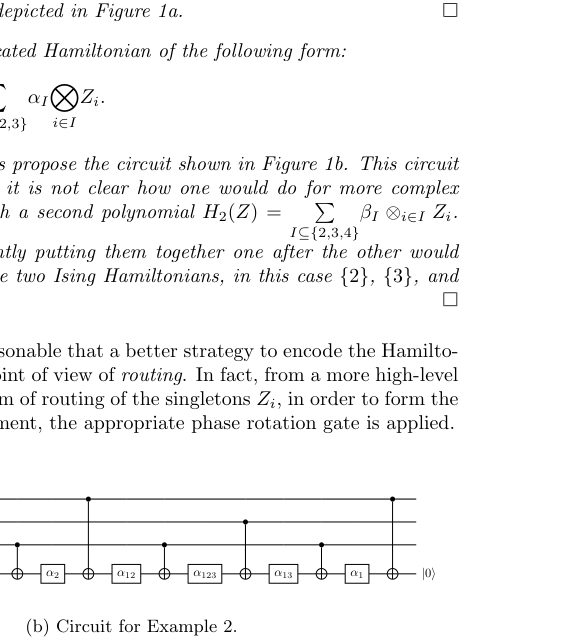
<figcaption class="paper-figure-caption"><b>Fig 1.</b> Figure 1: Quantum circuits for a few simple Ising Hamiltonians.</figcaption>
</figure>
<figure class="paper-figure-card">
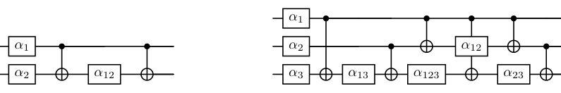
<figcaption class="paper-figure-caption"><b>Fig 2.</b> Figure 2: Template circuits for binary polynomials with 2 or 3 variables. We use the non-standard notation of superposing the rotation-Z gates and the cnot gate to stress that they can be simultaneously performed.</figcaption>
</figure>
<figure class="paper-figure-card">
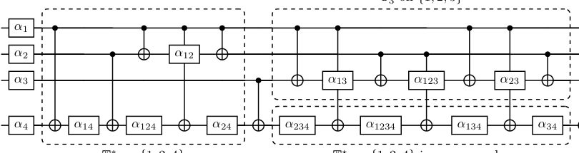
<figcaption class="paper-figure-caption"><b>Fig 3.</b> Figure 3: Template circuit T4. Is useful to interpret Algorithm 1 as Gray code applied as considering the i-th qubit as ancilla for the Gray code of the polynomial up to zi. The last qubit represent z4Q(z), while the first three qubits are R(z), see Equation (5).</figcaption>
</figure>
<figure class="paper-figure-card">
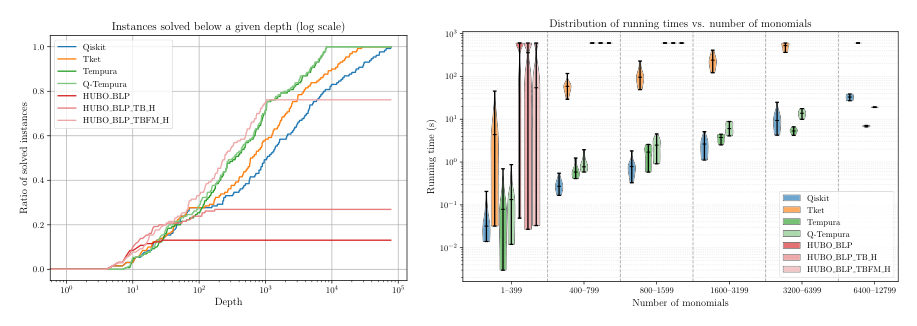
<figcaption class="paper-figure-caption"><b>Fig 4.</b> Figure 4: Performance of each method (Random instances). [Left] The plots represent the fraction of in- stances (y-axis) for which a specific algorithm synthesizes a circuit under a given depth (x-axis). [Right] The plots represent the runtime in seconds for each algorithm versus the number of monomials in the polynomial (x-axis).</figcaption>
</figure>
<figure class="paper-figure-card">
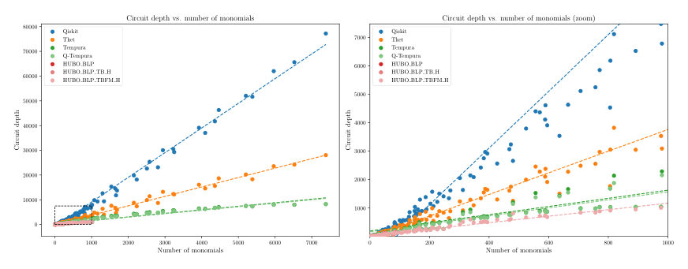
<figcaption class="paper-figure-caption"><b>Fig 5.</b> Figure 5: Performance of each method (Random instances). The plots represent the depth (y-axis) which a specific algorithm yield versus the number of monomials in the polynomial (x-axis). The regression lines are only for display purpose.</figcaption>
</figure>
</div>
<p><strong>Summary.</strong> This paper tackles the challenge of efficiently compiling quantum circuits for solving binary polynomial optimization problems on near-term quantum hardware. It proves that the circuit design problem is NP-Complete while simultaneously proposing a novel, high-performing heuristic algorithm called Tempura. The research is crucial for advancing the practical feasibility of quantum computation for optimization tasks.</p>
<p><strong>Why it may be interesting.</strong> This work directly addresses the practical limitations of current quantum hardware by providing theoretical bounds (NP-Completeness) and algorithmic improvements (Tempura) for mapping abstract optimization problems onto physical gate sets.</p>
<details>
<summary>Detailed structure</summary>
<p><strong>Main problem.</strong> The core problem is designing the shallowest quantum circuit required to implement the time-evolution unitary associated with a given binary polynomial Hamiltonian (HUBO).</p>
<p><strong>Main result.</strong> The authors prove that a decision variant of the circuit compilation problem is NP-Complete, and they propose a heuristic method (Tempura) that yields significantly shorter circuits than state-of-the-art approaches.</p>
<p><strong>Method.</strong> The work combines theoretical complexity analysis (proving NP-Completeness via reduction from 3-edge-coloring) with the development and benchmarking of scalable heuristic algorithms.</p>
<p><strong>Model / system.</strong> The system involves near-term quantum computers tasked with solving combinatorial optimization problems formulated as binary polynomials $P(z)$ over $\{-1, 1\}^n$. The Hamiltonian is $H_P(\mathbf{Z}) = \sum_{\mu \in \mathcal{M}} \alpha_\mu igotimes_{j=1}^n Z^{\mu_j}$.</p>
<p><strong>Key observables.</strong> Circuit Depth (primary metric to minimize), Number of Qubits ($n$), Polynomial Degree ($d$), and Number of Monomials ($|\mathcal{M}|$)</p>
<p><strong>Important parameters / regimes.</strong> The trade-off between using polynomial forms (HUBOs) for better scaling versus the resulting circuit depth overhead from decomposing high-degree gates ($d \ge 3$).</p>
<p><strong>Assumptions / limitations.</strong> The analysis often relies on mapping $d$-qubit gates into standard 1- and 2-qubit gates (CNOT and rotation-Z gates).</p>
<p><strong>Figures summary.</strong> Figures illustrate template circuits for small polynomials and show the application of a 'template-pruning method' to simplify complex quantum circuits. Tables provide extensive quantitative benchmarking comparing various compilation algorithms.</p>
<p><strong>Paper structure.</strong> The paper progresses from establishing the physical motivation (HUBOs vs. QUBOs) to formulating the circuit design as a classical optimization problem. It then proves NP-Completeness via reduction, details structural properties of feasible circuits using lemmas, and concludes with empirical performance comparisons.</p>
</details>
<details>
<summary>Abstract</summary>
<p>Solving combinatorial optimization problems on near-term quantum computers mainly relies on their quadratic unconstrained binary formulation. Lately, binary polynomial formulations start to take the center stage, having a better scaling with respect to the number of used qubits. However, while quadratic forms are straightforward to implement on quantum circuits, polynomial forms of degree $d$ incur in circuit depth overheads, due to the lack of $d$-qubit gates, for $d\geq 3$, on current hardware. In this paper, we study the problem of designing the shallowest quantum circuit for a given polynomial form. We formulate it as a classical binary linear problem and we prove the \textsf{NP}-completeness of a variant of it. On the algorithmic side, we offer a scalable and performant heuristic method to tackle it, Tempura, as well as faster binary linear problem formulations, which offer computational feasibility while sacrificing optimality. Our performance evaluation shows that the algorithms yield far shorter circuits than the state-of-the-art approaches, and Tempura is mostly comparable with them in terms of runtime.</p>
</details>
<p><sub><a href="#top">↑ back to top</a></sub></p>

<p><a id="paper-2610.13512"></a></p>
<h3 id="construction-of-isoscattering-non-isospectral-quantum-graphs-using-the-concept-of-a-germ-graph"><a href="http://arxiv.org/abs/2610.13512v1">Construction of isoscattering non-isospectral quantum graphs using the concept of a germ graph</a></h3>
<p><strong>Authors:</strong> Omer Farooq, Michał Ławniczak, Leszek Sirko<br>
<strong>Type:</strong> theory · <strong>Category:</strong> other · <strong>PDF:</strong> <a href="https://arxiv.org/pdf/2610.13512v1">https://arxiv.org/pdf/2610.13512v1</a><br>
<strong>Analysis basis:</strong> full PDF text, analyzed in chunks</p>
<div class="figure-strip-hint">↔ Scroll figures horizontally</div>
<div class="paper-figures-scroll">
<figure class="paper-figure-card">
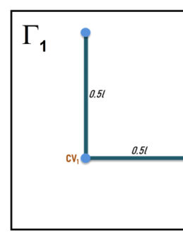
<figcaption class="paper-figure-caption"><b>Fig 1.</b> FIG. 1. The germ graph Γ1 with the contact vertices CV1 and CV2.</figcaption>
</figure>
<figure class="paper-figure-card">
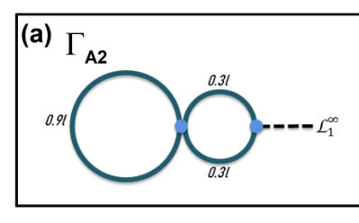
<figcaption class="paper-figure-caption"><b>Fig 2.</b> FIG. 2. (a) The two-loop graph ΓA2 and (b) the three-loop graph ΓA3.</figcaption>
</figure>
<figure class="paper-figure-card">
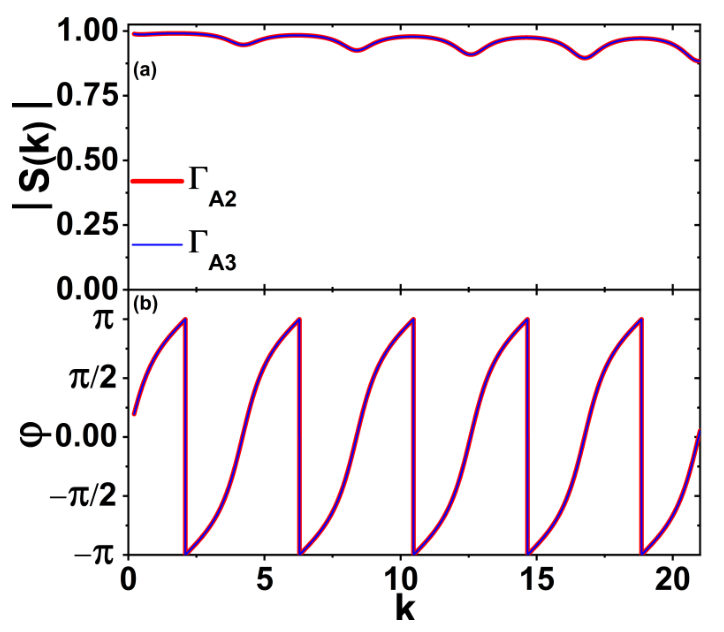
<figcaption class="paper-figure-caption"><b>Fig 3.</b> FIG. 3. Calculated scattering properties of the attachment graphs ΓA2 (red line) and ΓA3 (blue</figcaption>
</figure>
<figure class="paper-figure-card">
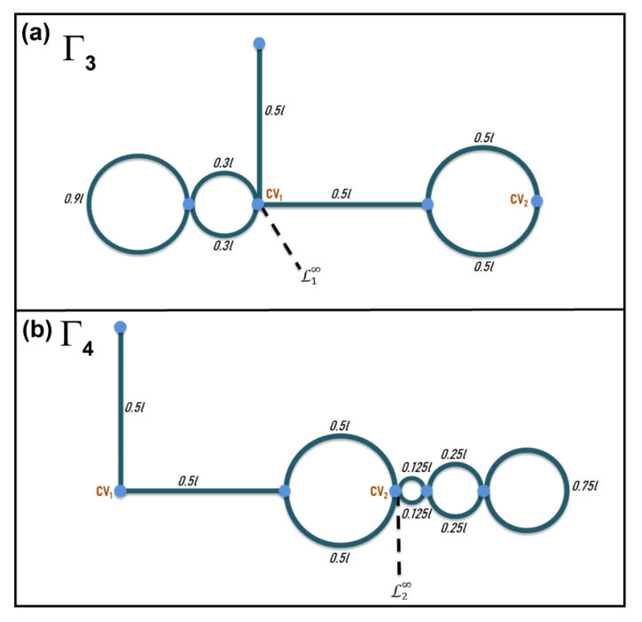
<figcaption class="paper-figure-caption"><b>Fig 4.</b> FIG. 4. Geometry of the extended graphs: (a) Γ3, formed by attaching the ΓA2 to the germ graph</figcaption>
</figure>
<figure class="paper-figure-card">
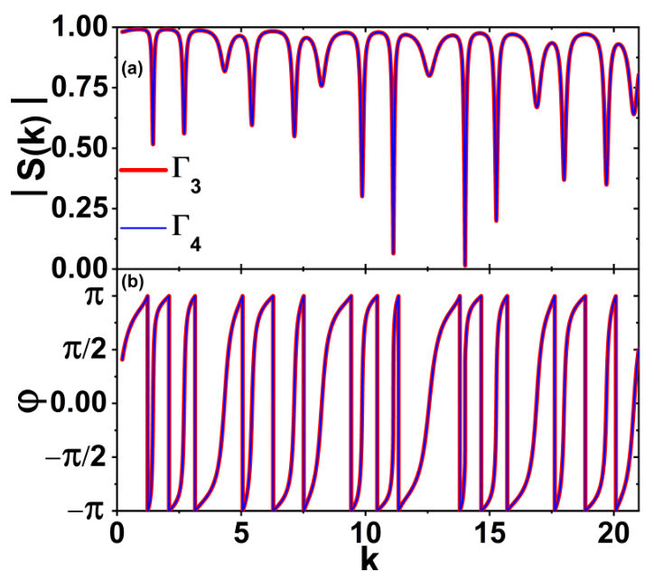
<figcaption class="paper-figure-caption"><b>Fig 5.</b> FIG. 5. Calculated scattering properties of Γ3 (red line) and Γ4 (blue line): (a) modulus |S| and</figcaption>
</figure>
</div>
<p><strong>Summary.</strong> This paper utilizes the concept of germ graphs to construct two quantum graphs ($\Gamma_3$ and $\Gamma_4$) that serve as a counterexample in inverse scattering theory. The graphs are proven to be non-isospectral because their Euler characteristics differ, yet they are found to be isoscattering because their calculated one-port scattering matrices coincide numerically. This highlights that spectral and scattering information alone is insufficient to uniquely determine the structure of a quantum graph.</p>
<p><strong>Why it may be interesting.</strong> The demonstration of isoscattering, non-isospectral graphs provides a concrete example of spectral/scattering non-uniqueness, which is a fundamental concept in inverse scattering theory relevant to quantum systems.</p>
<details>
<summary>Detailed structure</summary>
<p><strong>Main problem.</strong> The study addresses the non-uniqueness of reconstructing a physical system's structure from its spectral or scattering data.</p>
<p><strong>Main result.</strong> The authors constructed a pair of quantum graphs ($\Gamma_3$ and $\Gamma_4$) that are non-isospectral (different Euler characteristics) yet exhibit identical one-port scattering matrices (isoscattering).</p>
<p><strong>Method.</strong> The analysis involves calculating the Euler characteristic ($\chi$) for spectral comparison and numerically computing the one-port scattering matrix ($S(\kappa)$) using directed-bond representations for scattering comparison.</p>
<p><strong>Model / system.</strong> The physical system is modeled by quantum graphs, specifically constructing extended graphs ($\Gamma_3, \Gamma_4$) by attaching smaller graphs ($\Gamma_{A2}, \Gamma_{A3}$) to a central 'germ graph' ($\Gamma_1$).</p>
<p><strong>Key observables.</strong> Euler characteristic ($\chi$), one-port scattering matrix ($S(\kappa)$), modulus ($|S|$), and phase ($\varphi$) of the scattering matrix.</p>
<p><strong>Important parameters / regimes.</strong> Total metric length ($L = 3.5 	ext{ m}$) and dissipation ($eta = 0.0090 	ext{ m}^{-1/2}$).</p>
<p><strong>Assumptions / limitations.</strong> The analysis assumes the Euler characteristic is a spectral invariant for the compact graphs considered.</p>
<p><strong>Figures summary.</strong> Figures illustrate the graph constructions ($\Gamma_1, \Gamma_{A2}, \Gamma_{A3}$), and subsequent figures show the calculated modulus and phase of the scattering matrix for $\Gamma_3$ and $\Gamma_4$, demonstrating their numerical coincidence.</p>
<p><strong>Paper structure.</strong> The paper builds upon the germ graph concept to construct extended graphs. It first establishes the properties of the attachment graphs ($\Gamma_{A2}, \Gamma_{A3}$) and then analyzes the resulting extended graphs ($\Gamma_3, \Gamma_4$) by comparing their topological invariants ($\chi$) and their scattering responses ($S(\kappa)$).</p>
</details>
<details>
<summary>Abstract</summary>
<p>The recently developed concept of germ graphs (P. Kurasov {\it et al.}, Phys. Rev. Research {\bf 7}, L022071 (2025)) is employed to construct families of isocattering, non-isospectral graphs that exhibit dissipation. More specifically, a new pair of isoscattering non-isospectral graphs is constructed by connecting the existing isoscattering non-isospectral graphs, so called attachments, to the different contact vertices of the germ graph. The existing isoscattering non-isospectral graphs contained a two-loop graph labelled $Γ_{A2}$ and a three-loop graph labelled $Γ_{A3}$. These graphs have an equal total metric length, but different topologies. The resulting graphs $Γ_3$ and $Γ_4$ are verified as non-isospectral using their Euler characteristics, while their isoscattering properties are investigated by calculating the one-port scattering matrices numerically.</p>
</details>
<p><sub><a href="#top">↑ back to top</a></sub></p>

<p><a id="paper-2610.12782"></a></p>
<h3 id="coset-lifted-product-codes-constructing-quantum-ldpc-codes-from-non-normal-subgroup-actions"><a href="http://arxiv.org/abs/2610.12782v1">Coset Lifted Product Codes: Constructing Quantum LDPC Codes from Non-Normal Subgroup Actions</a></h3>
<p><strong>Authors:</strong> Rajendra Prasad Rajpurohit, V. Lalitha, Shayan Srinivasa Garani<br>
<strong>Type:</strong> theory · <strong>Category:</strong> quantum information and computing · <strong>PDF:</strong> <a href="https://arxiv.org/pdf/2610.12782v1">https://arxiv.org/pdf/2610.12782v1</a><br>
<strong>Analysis basis:</strong> full PDF text, analyzed in chunks</p>
<div class="figure-strip-hint">↔ Scroll figures horizontally</div>
<div class="paper-figures-scroll">
<figure class="paper-figure-card">
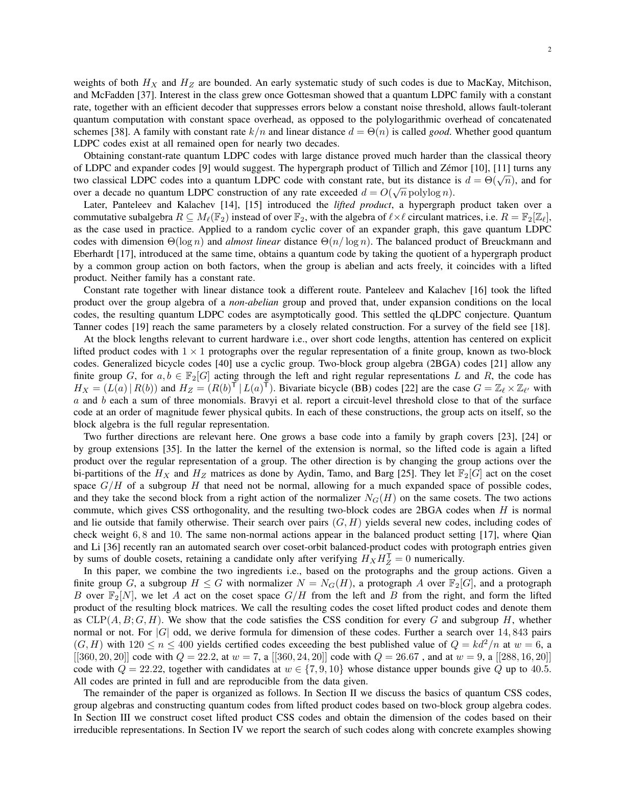
<figcaption class="paper-figure-caption"><b>Fig 1.</b> Low-resolution page preview, page 2</figcaption>
</figure>
<figure class="paper-figure-card">
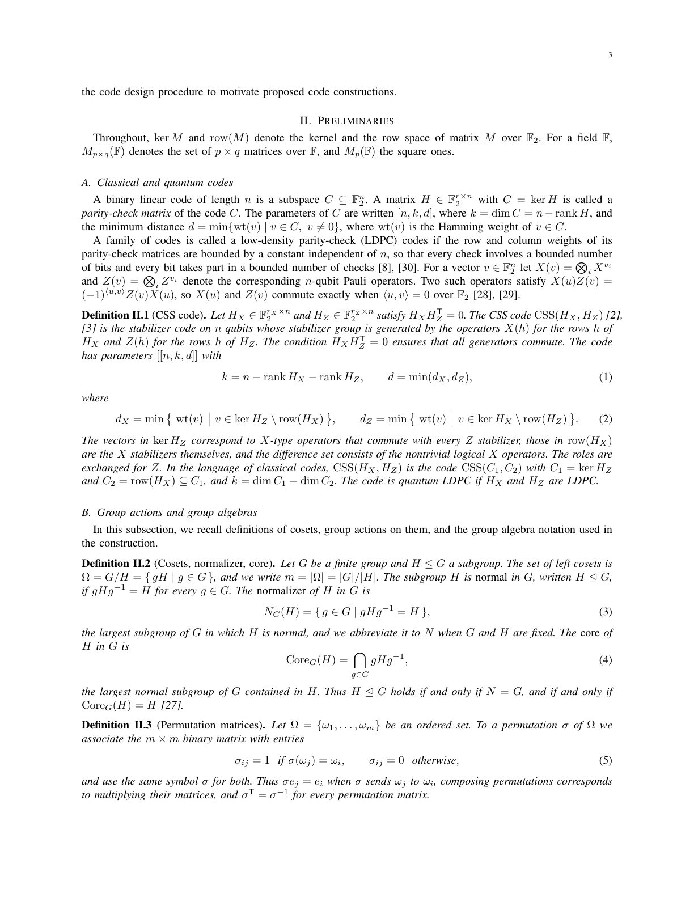
<figcaption class="paper-figure-caption"><b>Fig 2.</b> Low-resolution page preview, page 3</figcaption>
</figure>
<figure class="paper-figure-card">
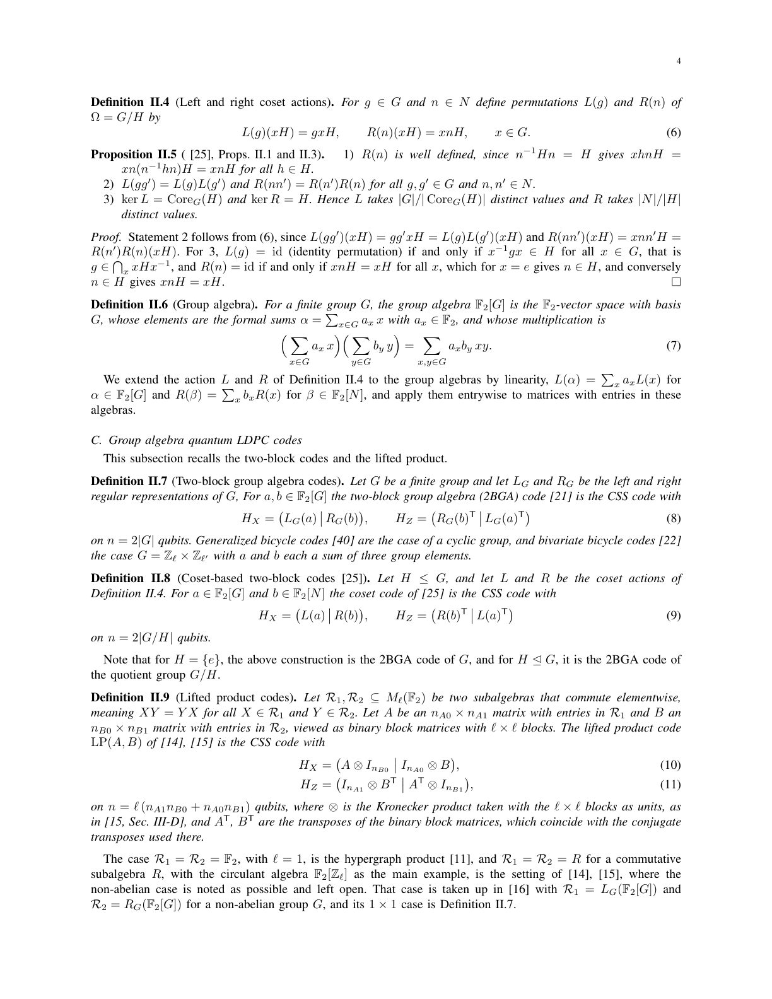
<figcaption class="paper-figure-caption"><b>Fig 3.</b> Low-resolution page preview, page 4</figcaption>
</figure>
<figure class="paper-figure-card">
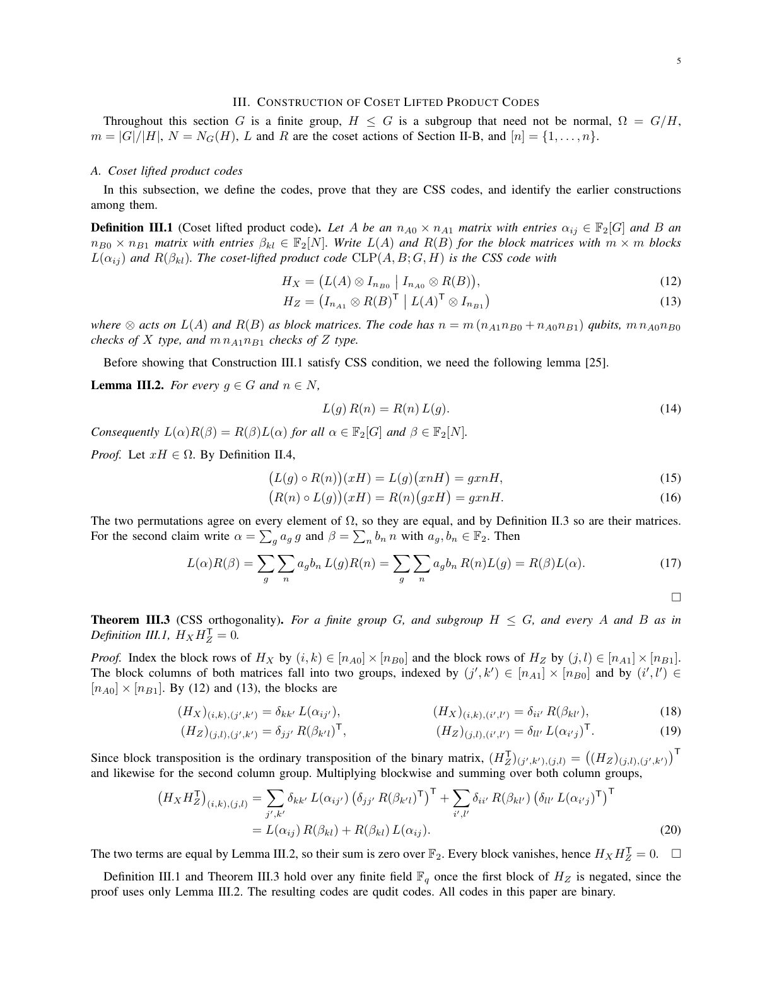
<figcaption class="paper-figure-caption"><b>Fig 4.</b> Low-resolution page preview, page 5</figcaption>
</figure>
<figure class="paper-figure-card">
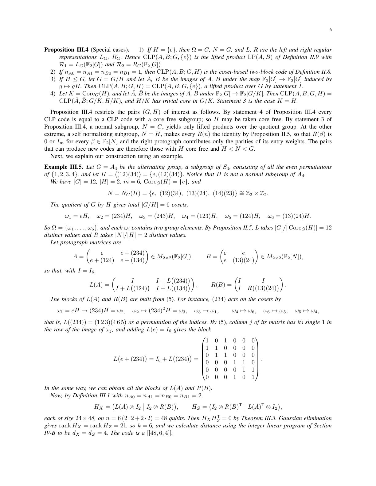
<figcaption class="paper-figure-caption"><b>Fig 5.</b> Low-resolution page preview, page 6</figcaption>
</figure>
</div>
<p><strong>Summary.</strong> This paper introduces Coset Lifted Product (CLP) codes, a new family of quantum LDPC codes built using group theory and coset actions. By systematically searching over various group structures, the authors construct and certify quantum codes with parameters that surpass current state-of-the-art bounds. This provides a powerful, general algebraic method for designing high-performance quantum error correction codes.</p>
<p><strong>Why it may be interesting.</strong> The work provides a powerful, general algebraic tool for constructing quantum codes, moving beyond standard constructions by incorporating non-normal subgroup actions, which is highly relevant for designing robust quantum memory and communication protocols.</p>
<details>
<summary>Detailed structure</summary>
<p><strong>Main problem.</strong> The paper focuses on constructing quantum Low-Density Parity-Check (LDPC) codes using a novel algebraic framework.</p>
<p><strong>Main result.</strong> They introduce Coset Lifted Product (CLP) codes, demonstrating that a systematic search over group pairs yields certified quantum codes exceeding previously known bounds on the quality metric Q.</p>
<p><strong>Method.</strong> The construction combines protograph structures with the coset action of a subgroup $H$ within a finite group $G$, leading to the definition of the parity-check matrices $H_X$ and $H_Z$.</p>
<p><strong>Model / system.</strong> The model is the quantum error-correcting code, specifically a CSS code, defined by two classical linear codes whose parity-check matrices satisfy the orthogonality condition $H_X H_Z^T = 0$.</p>
<p><strong>Key observables.</strong> Code parameters $[[n, k, d]]$, the code rate $k/n$, and the quality metric $Q = kd^2/n$.</p>
<p><strong>Important parameters / regimes.</strong> The construction depends on a finite group $G$, a subgroup $H \le G$ (which need not be normal), and associated protographs $A$ and $B$.</p>
<p><strong>Assumptions / limitations.</strong> The method assumes the existence of the group algebra $\mathbb{F}_2[G]$ and relies on algebraic techniques involving coset actions and representation theory for dimension calculation.</p>
<p><strong>Figures summary.</strong> No specific figures are described, but the notes detail the algebraic structure of the parity-check matrices derived from group actions.</p>
<p><strong>Paper structure.</strong> The paper systematically defines the CLP code construction, proves it satisfies the CSS condition, derives dimension formulas for odd order groups, and culminates in a large-scale search yielding concrete, high-performing code examples.</p>
</details>
<details>
<summary>Abstract</summary>
<p>We introduce coset lifted product (CLP) codes, a family of quantum LDPC codes that combine the protograph structure of lifted product codes with the coset action of Aydin, Tamo, and Barg \cite{AydinTamoBarg2026}. Given a finite group $G$, a subgroup $H \le G$ that need not be normal, a protograph $A$ over $\mathbb F_2[G]$, and a protograph $B$ over $\mathbb F_2[N_G(H)]$, the two protographs act on the cosets $G/H$ from the left and from the right to produce quantum CSS codes. Further, for groups of odd order, we give an explicit formula for the dimension as a sum over the irreducible representations $ρ$ of $G$ of hypergraph product dimensions. A search over $14,843$ pairs $(G,H)$ with $H$ restricted to be non-normal and $120 \le n \le 400$ yields certified codes that exceed the best published value of $Q=kd^2/n$ at check weights $6,7$ and $9$, i.e., we obtain $[[360,20,20]]$ at $w=6$, a $[[360,24,20]]$ code at $w=7$, and codes $[[252,16,18]]$ and $[[288,16,20]]$ at $w=9$. Our search also produce high-distance codes with parameters $[[168,10,14]], [[240,8,20]]$ at $w=6$ and $[[216,8,18]]$ at $w=7$.</p>
</details>
<p><sub><a href="#top">↑ back to top</a></sub></p>

<p><a id="paper-2610.13589"></a></p>
<h3 id="decoder-and-noise-aware-optimization-framework-for-clifford-deformed-quantum-error-correcting-codes"><a href="http://arxiv.org/abs/2610.13589v1">Decoder- and Noise-Aware Optimization Framework for Clifford-Deformed Quantum Error-Correcting Codes</a></h3>
<p><strong>Authors:</strong> Julius Rye Bønnelykke, Benjamin Joecker, Peter Krogstrup, Vincent Philippe Michal, Mark Kamper Svendsen<br>
<strong>Type:</strong> theory · <strong>Category:</strong> quantum information and computing · <strong>PDF:</strong> <a href="https://arxiv.org/pdf/2610.13589v1">https://arxiv.org/pdf/2610.13589v1</a><br>
<strong>Analysis basis:</strong> full PDF text, analyzed in chunks</p>
<div class="figure-strip-hint">↔ Scroll figures horizontally</div>
<div class="paper-figures-scroll">
<figure class="paper-figure-card">
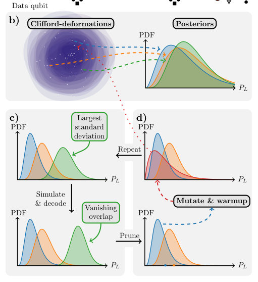
<figcaption class="paper-figure-caption"><b>Fig 1.</b> FIG. 1. a) Example Clifford deformation (CD) on the distance-3 surface code. Data qubits are represented by filled circles and check qubits by black squares. Connections be- tween data and check qubits represent the applied two-qubit gates. The color of a data qubit indicates the specific change made to its connected gates. b,c,d) Outline of the Evolution- Based Best-arm Identification (EBBI) method. b) Initializa- tion: Uniformly pick K random CDs from An and simulate each until W logical errors have been observed. The posterior over the logical error rate PL is modeled as a beta distribu- tion. c) Sampling: At each step, the posterior with the largest standard deviation is simulated and...</figcaption>
</figure>
<figure class="paper-figure-card">
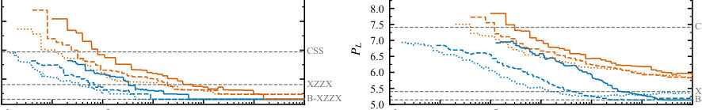
<figcaption class="paper-figure-caption"><b>Fig 2.</b> FIG. 2. Median performance over 25 independent runs of EBBI and random search as a function of shot count. The PL of specific CDs of interest [Table III] have been plotted as horizontal lines for comparison. The spread over all runs and over the central 15 out of 25 runs can be found in Fig. 11 in Appendix G. a-b) use the HBD noise model [34]. a) uses the distance-3 surface code with 3 syndrome extraction rounds. During the runtime of EBBI and random search, the noise model used noise strength psearch and η = 500, while the plotted points use p = 0.1% and η = 500 with an estimated PL from 108 shots. Reference lines for the PL of the CSS (undeformed code), XZZX [22] and B-XZZX (Fig. 3a,b)...</figcaption>
</figure>
<figure class="paper-figure-card">
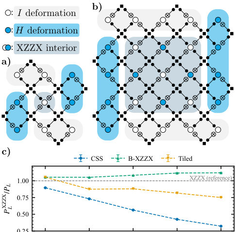
<figcaption class="paper-figure-caption"><b>Fig 3.</b> FIG. 3. Generalization of results. a) Optimal distance-3 CD on the surface code under the HBD-SI1000 noise model, obtained from a search over all 39 A3-CDs; it is also the best CD found by EBBI. b) Best distance-5 CD on the surface code under HBD-SI1000 noise found by EBBI. c) Improve- ment in PL over the XZZX surface code for the undeformed CSS code under HBD-SI1000(p = 0.1%, η = 500), the tiled optimal distance-3 CD [23] (panel a) and the discovered B- XZZX code. The error bars show one standard deviation and are too small to see in the plot; each PL at distance-3 to distance-9 is estimated from 1010 shots in both the logical X and Z bases of the surface code, with distance-11 using 1011</figcaption>
</figure>
<figure class="paper-figure-card">
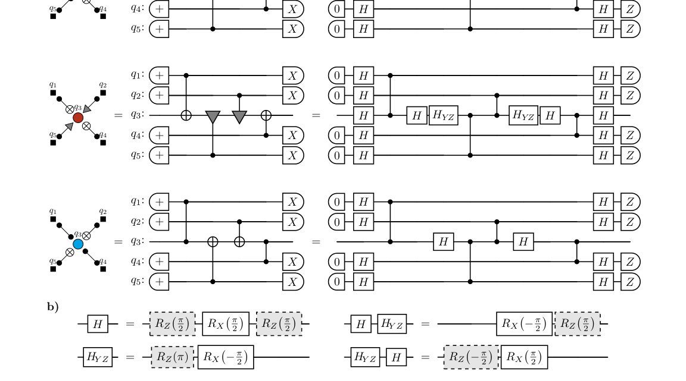
<figcaption class="paper-figure-caption"><b>Fig 4.</b> FIG. 4. a) Circuit diagrams illustrating stabilizer measurements in the surface code under different deformations in A3. Left: Measurement circuits expressed using the corresponding controlled-Pauli interactions. Right: Controlled-X and controlled-Y operations are decomposed into a single controlled-Z gate together with basis changes on the data qubit. b) ZXZ Euler decomposition up to a global phase of the basis-change gates used in panel a and their products. Virtual RZ rotations (dashed boxes) are implemented in software and therefore introduce negligible latency and are thus treated as ideal in this work.</figcaption>
</figure>
<figure class="paper-figure-card">
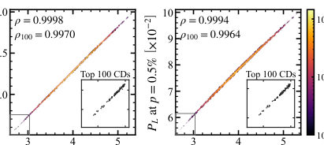
<figcaption class="paper-figure-caption"><b>Fig 5.</b> FIG. 7. Pearson correlation of the CD PL as the HBD noise model error strength p is increased from p = 0.1% to p = 0.25% (left plot) and p = 0.5% (right plot). Correlation numbers are reported for both the entire CD space and for only the 100 CDs with the lowest PL (at p = 0.1%) shown in the insets. Each PL was estimated using 108 shots.</figcaption>
</figure>
</div>
<p><strong>Summary.</strong> This work presents a novel optimization framework, EBBI, to efficiently search for the best Clifford Deformations for Quantum Error-Correcting Codes. By treating the noise and decoding process as a black box, EBBI significantly outperforms random search in finding CDs that minimize logical errors under realistic circuit-level noise. This advances the field toward scalable, practical fault-tolerant quantum computation.</p>
<p><strong>Why it may be interesting.</strong> The development of EBBI provides a scalable, data-driven methodology for optimizing QEC codes, moving beyond brute-force searches to tackle complex, high-dimensional optimization problems in quantum information.</p>
<details>
<summary>Detailed structure</summary>
<p><strong>Main problem.</strong> The core problem is finding the optimal Clifford Deformation (CD) for Quantum Error-Correcting Codes (QEC) to minimize the logical error rate, as exhaustive search over the exponentially growing space of CDs is infeasible.</p>
<p><strong>Main result.</strong> The proposed algorithm, EBBI, successfully identifies near-optimal CDs with vastly fewer shots than random search, and it discovered a new, systematically scalable CD pattern (B-XZZX) with a measurable advantage over existing codes.</p>
<p><strong>Method.</strong> The authors introduce Evolution-Based Best-arm Identification (EBBI), a shot-efficient search algorithm that treats the entire optimization process (circuit, noise, decoder) as a black box, combining evolutionary search principles with statistical sampling.</p>
<p><strong>Model / system.</strong> The study focuses on QEC codes, specifically benchmarking on the surface code, and analyzing performance under realistic circuit-level noise models (e.g., Z-biased noise).</p>
<p><strong>Key observables.</strong> Logical error rate ($P_L$), number of shots required for optimization, and the relative performance advantage of the discovered CD.</p>
<p><strong>Important parameters / regimes.</strong> Code distance ($d$), physical error rate ($p$), and the specific noise model (e.g., SI1000-like).</p>
<p><strong>Assumptions / limitations.</strong> The success of the search relies on the assumption that small changes in CD patterns result in similar logical error rates, allowing the search to be guided effectively.</p>
<p><strong>Figures summary.</strong> Figures illustrate the EBBI search process (Initialization, Sampling, Pruning) and compare the PL rankings of various CDs under different noise models and decoders, showing EBBI's superior convergence.</p>
<p><strong>Paper structure.</strong> The paper first establishes the difficulty of CD optimization, then details the EBBI algorithm, benchmarks its performance on the surface code using specific noise models, and concludes by demonstrating the scalability and novelty of the discovered optimal CD patterns.</p>
</details>
<details>
<summary>Abstract</summary>
<p>Practical fault-tolerant quantum computing requires qubit-efficient quantum error correction (QEC). Clifford deformations (CDs) modify the stabilizers of a QEC code to lower its logical error rate at no additional resource cost. However, the number of possible CDs grows exponentially with the number of qubits, making exhaustive search infeasible beyond small codes. In this work, we further show that under circuit level noise the optimal CD depends strongly on both the noise model and decoder. To make systematic CD optimization possible, we introduce Evolution-Based Best-arm Identification (EBBI), a shot-efficient search algorithm that treats the circuit, noise model and decoder as a black box. We benchmark EBBI's performance on the rotated surface code, under two strongly $Z$-biased circuit-level noise models with the PyMatching decoder. At distance 3, EBBI finds the optimal CD using up to $\sim 1100\times$ fewer shots than random search. At distance 5, when run at the target error rate, the median EBBI run converges to the CDs we believe to be optimal, while random search never converges. Under a $Z$-biased SI1000-like noise model, EBBI discovers a new CD, the B-XZZX code, which we generalized to larger distances. It differs from XZZX on only a fraction $\mathcal{O}(d^{-1})$ of the qubits at code distance $d$, yet its relative advantage grows from $\approx 5\%$ at $d = 3$ to $\approx 12\%$ at $d = 11$. We thus show that the B-XZZX pattern found by EBBI can be systematically scaled to larger code distances. Our work represents a first step towards scalable CD optimization for general QEC codes.</p>
</details>
<p><sub><a href="#top">↑ back to top</a></sub></p>

<p><a id="paper-2610.13808"></a></p>
<h3 id="diversity-aware-ensemble-of-quantum-classical-models-via-combinatorial-fusion"><a href="http://arxiv.org/abs/2610.13808v1">Diversity-Aware Ensemble of Quantum-Classical Models via Combinatorial Fusion</a></h3>
<p><strong>Authors:</strong> Jingyan Xu, Yuanhong Wu, Samuel Yen-Chi Chen, Sean Patten, Christina Schweikert, D. Frank Hsu<br>
<strong>Type:</strong> theory · <strong>Category:</strong> other · <strong>PDF:</strong> <a href="https://arxiv.org/pdf/2610.13808v1">https://arxiv.org/pdf/2610.13808v1</a><br>
<strong>Analysis basis:</strong> full PDF text, analyzed in chunks</p>
<div class="figure-strip-hint">↔ Scroll figures horizontally</div>
<div class="paper-figures-scroll">
<figure class="paper-figure-card">
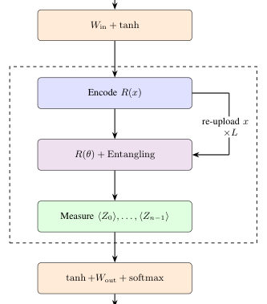
<figcaption class="paper-figure-caption"><b>Fig 1.</b> Fig. 1: VQC architecture.</figcaption>
</figure>
<figure class="paper-figure-card">
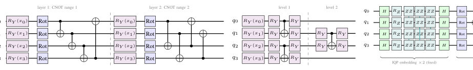
<figcaption class="paper-figure-caption"><b>Fig 2.</b> Fig. 2: Representative circuit architectures on n = 4 qubits, illustrating three design philosophies in the 8-circuit pool. (a) StrongEnt; (b) TTN; (c) IQP. The remaining five circuits (BasicEnt, TwoDesign, Random, QAOA, MPS) follow one of these three philosophies and are described in the text.</figcaption>
</figure>
<figure class="paper-figure-card">
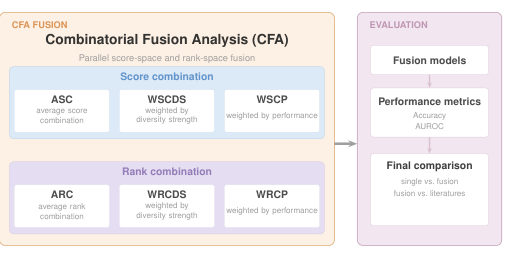
<figcaption class="paper-figure-caption"><b>Fig 3.</b> Fig. 3: Workflow of combining quantum and classical models using CFA.</figcaption>
</figure>
<figure class="paper-figure-card">

<figcaption class="paper-figure-caption"><b>Fig 4.</b> Fig. 5: Diversity rank-score functions for the four datasets.</figcaption>
</figure>
<figure class="paper-figure-card">

<figcaption class="paper-figure-caption"><b>Fig 5.</b> Fig. 6: Rank-score function graphs on the test sets of the four datasets (quantum models are highlighted in maroon).</figcaption>
</figure>
</div>
<p><strong>Summary.</strong> This work proposes Combinatorial Fusion Analysis (CFA) to improve Quantum Machine Learning by fusing predictions from multiple, architecturally diverse quantum circuits. CFA uses cognitive diversity and rank-score functions to systematically combine model outputs. The method proves superior to single-model approaches across various classification tasks, highlighting the value of structural diversity in quantum model ensembles.</p>
<p><strong>Why it may be interesting.</strong> While focused on ML, the rigorous quantification of structural diversity (CD) and the systematic combination of multiple quantum models provides a novel, data-driven approach to characterizing the robustness and potential of complex quantum circuits.</p>
<details>
<summary>Detailed structure</summary>
<p><strong>Main problem.</strong> The paper addresses the limitation of current Quantum Machine Learning (QML) pipelines that select only a single best quantum circuit architecture, ignoring structural diversity.</p>
<p><strong>Main result.</strong> A novel framework, Combinatorial Fusion Analysis (CFA), combining predictions from diverse quantum and classical models consistently outperforms the best individual model on multiple binary classification benchmarks, showing improvements up to 6.03%.</p>
<p><strong>Method.</strong> CFA is a model fusion framework that combines multiple scoring systems using the Rank-Score Function (RSF) and quantifies model dissimilarity via Cognitive Diversity (CD).</p>
<p><strong>Model / system.</strong> The models are Variational Quantum Circuits (VQCs) acting as trainable function approximators within hybrid quantum-classical machine learning pipelines. The search space involves architecturally diverse circuits.</p>
<p><strong>Key observables.</strong> Accuracy (up to 6.03% improvement), Cognitive Diversity (CD).</p>
<p><strong>Important parameters / regimes.</strong> The search space is defined by choices like Hadamard Initialization, Encoding Rotation, and Entangling Topology.</p>
<p><strong>Assumptions / limitations.</strong> The core assumption is that structural diversity across quantum circuit architectures can be leveraged to enhance predictive power through model fusion.</p>
<p><strong>Figures summary.</strong> Figure 1 illustrates the general VQC architecture flow, and Figure 2 shows three representative circuit architectures on 4 qubits.</p>
<p><strong>Paper structure.</strong> The paper introduces the problem of single-model reliance in QML, proposes the CFA framework using RSF and CD to measure diversity, and validates this fusion approach on four distinct binary classification benchmarks.</p>
</details>
<details>
<summary>Abstract</summary>
<p>Variational quantum circuits (VQCs) are highly sensitive to circuit architecture, yet most quantum machine learning pipelines select a single best design and discard the remaining candidates. This paper addresses whether the structural diversity across quantum circuit search spaces can be used to produce stronger predictions through model fusion. We apply Combinatorial Fusion Analysis (CFA), a model fusion framework that selects and combines multiple scoring systems using rank-score function (RSF) and cognitive diversity (CD), to a pool of 29 architecturally diverse classical models and quantum circuits. Using a diversity-aware model selection method, we identify subsets of maximally diverse models and combine them with both score and rank combination. Experiments on four binary classification benchmarks covering different domains demonstrate that CFA-based hybrid classical-quantum fusion consistently outperform the best individual model on every dataset considered with improvements up to 6.03% in accuracy. When comparing with relevant literatures, the CFA framework further achieves superior performance across all four datasets.</p>
</details>
<p><sub><a href="#top">↑ back to top</a></sub></p>

<p><a id="paper-2610.13709"></a></p>
<h3 id="dynamical-lie-algebras-for-fixed-gate-quantum-ansatze"><a href="http://arxiv.org/abs/2610.13709v1">Dynamical Lie Algebras for Fixed-Gate Quantum Ansätze</a></h3>
<p><strong>Authors:</strong> Orlane Zang, Daniel Juteau, Tony Quertier, Grégoire Barrué<br>
<strong>Type:</strong> theory · <strong>Category:</strong> quantum information and computing · <strong>PDF:</strong> <a href="https://arxiv.org/pdf/2610.13709v1">https://arxiv.org/pdf/2610.13709v1</a><br>
<strong>Analysis basis:</strong> full PDF text, analyzed in chunks</p>
<div class="figure-strip-hint">↔ Scroll figures horizontally</div>
<div class="paper-figures-scroll">
<figure class="paper-figure-card">

<figcaption class="paper-figure-caption"><b>Fig 1.</b> Figure 3: A layer of our Ansatz. This layer consists of parameterised RY rotation gates, followed by unparameterised CX gates.</figcaption>
</figure>
</div>
<p><strong>Summary.</strong> This paper introduces an algebraic method to compute the Dynamical Lie Algebra (DLA) for quantum circuits combining trainable and fixed gates. By mapping the gate evolution to linear transformations over F_2, the authors prove that the effective generators are periodic, leading to a finite, computable description of the circuit's underlying symmetry structure. This is vital for understanding the limitations and scaling of variational quantum algorithms.</p>
<p><strong>Why it may be interesting.</strong> This work provides deep mathematical tools (Lie algebra theory applied to quantum circuits) to characterize the expressive power and complexity scaling of variational quantum algorithms, which is crucial for understanding resource requirements in quantum computation.</p>
<details>
<summary>Detailed structure</summary>
<p><strong>Main problem.</strong> The paper develops a method to compute the Dynamical Lie Algebra (DLA) for Parameterized Quantum Circuits (PQCs) that incorporate both trainable parameters and fixed, non-trainable entangling gates.</p>
<p><strong>Main result.</strong> The DLA is characterized by the Lie closure of successive adjoint actions of the fixed gates on the initial trainable generators, leading to a finite, periodic set of effective generators.</p>
<p><strong>Method.</strong> The core method involves analyzing the evolution of Pauli operators under fixed unitary conjugation, which is mapped to linear transformations by symplectic matrices over F_2, allowing the determination of the conjugation period.</p>
<p><strong>Model / system.</strong> The model is a PQC Ansatz structure, typically $V_L = U W_L \cdots U W_1$, where $W_i$ are parameterized gates and $U$ is a fixed Clifford unitary block acting on $n$ qubits.</p>
<p><strong>Key observables.</strong> The Dynamical Lie Algebra ($\mathfrak{g}_L$), the Lie Saturation Depth ($L_{	ext{Lie}}$), and the conjugation periodicity ($d$ or $T_n$).</p>
<p><strong>Important parameters / regimes.</strong> The number of qubits ($n$), the structure of the fixed gate $U$ (e.g., ring of CX gates), and the field $\mathbb{F}_2$.</p>
<p><strong>Assumptions / limitations.</strong> The fixed block $U$ is assumed to be a Clifford operator, and the analysis relies on representing Pauli strings and conjugation via linear algebra over $\mathbb{F}_2$.</p>
<p><strong>Figures summary.</strong> Figure 1 illustrates the general HEA structure ($U W_L \cdots U W_1$), and Figure 2/3 show the decomposition of specific gates (like RZZ) used to verify the generator preservation method.</p>
<p><strong>Paper structure.</strong> The paper establishes the framework by defining the DLA via generators. It then develops the algebraic machinery using adjoint actions and symplectic matrices to track the evolution of these generators layer by layer, culminating in the determination of the finite periodicity of the effective generator set.</p>
</details>
<details>
<summary>Abstract</summary>
<p>Parameterized Quantum Circuits have emerged as a central framework for variational quantum algorithms in the NISQ regime, with major applications in quantum simulation, combinatorial optimization, and, more recently, quantum machine learning (QML). By developing a new approach for computing dynamical Lie algebras associated with quantum circuits combining parametrized gates and non-parametrized entangling gates, we aim to extend the applicability of recent algebraic results to architectures that are actually used in quantum machine learning.</p>
</details>
<p><sub><a href="#top">↑ back to top</a></sub></p>

<p><a id="paper-2610.13602"></a></p>
<h3 id="entanglement-catalysis-beyond-the-asymptotic-rate"><a href="http://arxiv.org/abs/2610.13602v1">Entanglement Catalysis Beyond the Asymptotic Rate</a></h3>
<p><strong>Authors:</strong> Alexander Streltsov<br>
<strong>Type:</strong> theory · <strong>Category:</strong> quantum information and computing · <strong>PDF:</strong> <a href="https://arxiv.org/pdf/2610.13602v1">https://arxiv.org/pdf/2610.13602v1</a><br>
<strong>Analysis basis:</strong> full PDF text, analyzed in chunks</p>
<div class="figure-strip-hint">↔ Scroll figures horizontally</div>
<div class="paper-figures-scroll">
<figure class="paper-figure-card">

<figcaption class="paper-figure-caption"><b>Fig 1.</b> FIG. 1. Universal fixed-error second-order coefficients nor- malized by √</figcaption>
</figure>
</div>
<p><strong>Summary.</strong> This theoretical paper analyzes entanglement concentration, a key process in quantum information, focusing on performance limitations in finite systems. It proves that using an auxiliary 'entanglement catalyst' can fundamentally overcome the negative finite-size penalty that otherwise degrades protocol efficiency. The work provides exact mathematical characterizations of these catalytic gains.</p>
<p><strong>Why it may be interesting.</strong> The rigorous mathematical determination of finite-size corrections in resource theories like entanglement is crucial for designing practical quantum protocols that operate away from the idealized asymptotic limit.</p>
<details>
<summary>Detailed structure</summary>
<p><strong>Main problem.</strong> The paper investigates how an auxiliary state, or entanglement catalyst, can mitigate the finite-size penalty inherent in entanglement concentration protocols.</p>
<p><strong>Main result.</strong> Catalysis completely overcomes the finite-size penalty for bipartite pure states, leading to a positive second-order correction term where unassisted protocols suffer a loss.</p>
<p><strong>Method.</strong> The analysis uses advanced concepts from quantum information theory, including majorization, Klimesh functions, and asymptotic analysis of power sums to derive precise bounds.</p>
<p><strong>Model / system.</strong> The system involves bipartite pure states undergoing entanglement concentration, aiming to convert multiple copies of a state into nearly perfect Bell pairs under finite error tolerance.</p>
<p><strong>Key observables.</strong> Entanglement Entropy ($H$), the finite-size correction term ($\sqrt{n}$), and the comparison between catalytic ($b_{	ext{cat}}$) and unassisted ($b_0$) rate coefficients.</p>
<p><strong>Important parameters / regimes.</strong> Error tolerance ($\epsilon$), number of copies ($n$), and the source state's Schmidt coefficients (represented by probability vectors $p$).</p>
<p><strong>Assumptions / limitations.</strong> The analysis focuses on exact catalysis (where the catalyst is returned uncorrupted) and the finite-size scaling regime ($\sqrt{n}$ corrections) at fixed $\epsilon > 0$.</p>
<p><strong>Figures summary.</strong> Figure 1 compares the universal fixed-error second-order coefficients, showing the sign-reversal interval ($0 < \epsilon < 1/\sqrt{2}$) where catalysis changes a loss into a gain.</p>
<p><strong>Paper structure.</strong> The paper builds its argument by first establishing necessary and sufficient conditions using power-sum inequalities (Lemmas 6, 7, 10), then deriving upper and lower bounds on the achievable rate using asymptotic analysis, culminating in the proof that catalysis achieves the optimal rate.</p>
</details>
<details>
<summary>Abstract</summary>
<p>Quantum entanglement is a fundamental resource in quantum information science, commonly consumed to perform tasks like quantum teleportation and quantum key distribution. Entanglement concentration converts partially entangled pure states into nearly perfect Bell pairs. While its efficiency is well understood in the asymptotic limit, practical protocols must operate with finite systems. In this finite regime, and at the low error levels relevant in practice, performance is penalized by corrections that reduce the achievable yield. We investigate whether this fundamental finite-size penalty can be mitigated by an entanglement catalyst: an auxiliary state that aids the transformation but is returned exactly and uncorrupted. Although such a catalyst cannot increase the leading-order asymptotic yield, we show that it fundamentally alters the finite-size scaling. For every bipartite pure state with nonuniform Schmidt coefficients, we exactly determine the optimal second-order correction to the yield and show that catalysis completely overcomes this finite-size penalty.</p>
</details>
<p><sub><a href="#top">↑ back to top</a></sub></p>

<p><a id="paper-2610.12685"></a></p>
<h3 id="fast-computational-primitives-for-la-cross-qldpc-codes"><a href="http://arxiv.org/abs/2610.12685v1">Fast computational primitives for La-cross qLDPC codes</a></h3>
<p><strong>Authors:</strong> Andrea Di Fini, Tom Hartweg, Laura Pecorari, Guido Pupillo, Samuel Crew<br>
<strong>Type:</strong> theory · <strong>Category:</strong> quantum information and computing · <strong>PDF:</strong> <a href="https://arxiv.org/pdf/2610.12685v1">https://arxiv.org/pdf/2610.12685v1</a><br>
<strong>Analysis basis:</strong> full PDF text, analyzed in chunks</p>
<div class="figure-strip-hint">↔ Scroll figures horizontally</div>
<div class="paper-figures-scroll">
<figure class="paper-figure-card">

<figcaption class="paper-figure-caption"><b>Fig 1.</b> Figure 1: Canonical logical representatives in the [[65, 9, 4]] La-cross code. Colours distinguish three logical qubits: (0, 0), (1, 1) and (2, 2). Their X representatives occupy principal rows (left), while their Z representatives occupy principal columns (right). Only the 7 × 7 principal sector is shown.</figcaption>
</figure>
<figure class="paper-figure-card">

<figcaption class="paper-figure-caption"><b>Fig 2.</b> Figure 4: Surface-code interface for [[25, 1, 4]] →[[65, 9, 4]] with q = e1 and u = (1, 1, 1)T . (a) Two-layer CNOT pattern implementing the interface. (b) X-error propagation preserves principal columns. (c) Z-error propagation preserves principal rows. (d) A weight-D source readout error realizes Zsrc.</figcaption>
</figure>
</div>
<p><strong>Summary.</strong> This paper develops a comprehensive set of computational primitives for La-cross quantum LDPC codes, positioning them as a highly efficient alternative to surface codes. By analyzing the code's symmetries and logical operators, the authors prove that these codes support a complete Clifford+T instruction set. This advances the feasibility of building fault-tolerant quantum computers using low-overhead, structured codes.</p>
<p><strong>Why it may be interesting.</strong> While focused on abstract quantum codes, the rigorous mathematical framework for achieving universal computation with low-connectivity structures is highly relevant to designing physical quantum hardware architectures.</p>
<details>
<summary>Detailed structure</summary>
<p><strong>Main problem.</strong> The paper aims to develop fast and efficient computational primitives for La-cross quantum LDPC codes to enable fault-tolerant quantum computation.</p>
<p><strong>Main result.</strong> The authors establish that La-cross codes provide a simple, low-connectivity generalization of surface code computation, supporting a complete Clifford+T instruction set across multiple encoded qubits.</p>
<p><strong>Method.</strong> The methodology involves analyzing the code's intrinsic automorphisms, constructing canonical Pauli representatives, and proving the existence of disjoint physical representatives for logical operators.</p>
<p><strong>Model / system.</strong> The focus is on La-cross hypergraph product (HGP) quantum LDPC codes, which are analyzed as a generalization of the surface code structure for quantum error correction.</p>
<p><strong>Key observables.</strong> The logical Pauli algebra, the size of the automorphism group $\Gamma_{k,n}$, and the number of disjoint physical representatives ($D$).</p>
<p><strong>Important parameters / regimes.</strong> Code parameters $[[n^2 + m^2, k^2, d(C_{k,n})]]$, and the required Clifford+T instruction set.</p>
<p><strong>Assumptions / limitations.</strong> The study focuses on near-term regimes using small finite size codes whose structure natively supports fast logical operations.</p>
<p><strong>Figures summary.</strong> Figure 1 illustrates the $k 	imes k$ grid arrangement of logical qubits and canonical X/Z representatives; other figures/tables detail the structure and size of the automorphism group $\Gamma_{k,n}$.</p>
<p><strong>Paper structure.</strong> The paper develops by first defining the code structure and its logical operators, then analyzing the automorphism group to show it generates the Clifford group, followed by proving the existence of disjoint representatives and constructing the necessary interfaces for universal computation.</p>
</details>
<details>
<summary>Abstract</summary>
<p>Quantum LDPC codes promise to reduce the overhead of fault-tolerant quantum computation, but their practical use requires efficient logical gates, measurements, and access to non-Clifford resources. Here, we develop a complete set of computational primitives for La-cross hypergraph product codes. For a subclass of these codes, we show that seed automorphisms together with fold-transversal gates generate the full logical Clifford group up to Pauli corrections. We further prove that every rank one logical operator admits $D$ pairwise disjoint physical representatives, enabling parallel gauging and a space--time tradeoff for logical measurements. Finally, we construct an addressable surface code interface for injecting externally prepared resource states into selected logical qubits. Together, these results establish La-cross codes as a simple, low-connectivity generalisation of surface code computation, retaining analogous computational primitives while providing a complete Clifford+$T$ instruction set across multiple encoded qubits.</p>
</details>
<p><sub><a href="#top">↑ back to top</a></sub></p>

<p><a id="paper-2610.13609"></a></p>
<h3 id="genuine-multipartite-nonlocality-detection-in-graph-states"><a href="http://arxiv.org/abs/2610.13609v1">Genuine multipartite nonlocality detection in graph states</a></h3>
<p><strong>Authors:</strong> Owidiusz Makuta, Flavio Baccari, Remigiusz Augusiak<br>
<strong>Type:</strong> theory · <strong>Category:</strong> quantum information and computing · <strong>PDF:</strong> <a href="https://arxiv.org/pdf/2610.13609v1">https://arxiv.org/pdf/2610.13609v1</a><br>
<strong>Analysis basis:</strong> full PDF text, analyzed in chunks</p>
<div class="figure-strip-hint">↔ Scroll figures horizontally</div>
<div class="paper-figures-scroll">
<figure class="paper-figure-card">

<figcaption class="paper-figure-caption"><b>Fig 1.</b> FIG. 1. Numerical estimations of the fidelity with the target N-partite GHZ state as a function of the visibility p = β/βQ, computed for both the inequalities where the rotated party is r = 1 and r = 2. The fidelity is the GMNL inequality is compared against the equivalent BASTA inequalities for the same graph and rotated party choice.</figcaption>
</figure>
<figure class="paper-figure-card">

<figcaption class="paper-figure-caption"><b>Fig 2.</b> FIG. 3. The representatives of classes of graphs for which finding a vertex r with all its neighbours connected to each other and |Nr| ⩾2 is impossible. The class no. 19 is the graph in black, the class no. 45 is the graph in black plus one of the blue vertices, the class no. 134 is the graph in black plus both of the blue vertices and the class no. 135 is the graph in black plus one of the vertices in blue and the vertex in red.</figcaption>
</figure>
</div>
<p><strong>Summary.</strong> This paper addresses the experimental difficulty of detecting Genuine Multipartite Nonlocality (GMNL) in graph states. The authors introduce two novel classes of Bell inequalities tailored for this purpose. They derive rigorous mathematical bounds for these inequalities, providing a theoretical framework for testing genuine quantum correlations in multi-qubit systems.</p>
<p><strong>Why it may be interesting.</strong> This work provides theoretical tools (specific Bell inequalities and rigorous bounds) to test fundamental quantum properties like GMNL, which is crucial for certifying genuine quantum correlations in complex quantum hardware.</p>
<details>
<summary>Detailed structure</summary>
<p><strong>Main problem.</strong> The primary challenge is developing experimentally feasible methods to detect Genuine Multipartite Nonlocality (GMNL) in quantum systems.</p>
<p><strong>Main result.</strong> The authors introduce two classes of multipartite Bell inequalities for graph states: one scaling linearly with parties and another offering higher noise robustness. They derive general functional bounds ($eta_{BL}$ and $eta_Q$) for GMNL detection.</p>
<p><strong>Method.</strong> The work involves constructing and bounding specific Bell functionals ($\langle I 
angle$) using techniques like sum-of-squares decomposition and applying graph-theoretic constraints derived from local complementation equivalence.</p>
<p><strong>Model / system.</strong> The study focuses on N-qubit graph states, $|	ext{G}
angle$, defined by a graph $G=(V, E)$. The detection relies on violating generalized multipartite Bell inequalities.</p>
<p><strong>Key observables.</strong> The Bell functional $I$ (a linear combination of probabilities $\vec{p}$), the classical bound ($eta_L$), and the quantum bound ($eta_Q$).</p>
<p><strong>Important parameters / regimes.</strong> The number of parties ($n$), the structure of the graph $G$, and parameters derived from the graph structure like $|\dot{N}_r|$.</p>
<p><strong>Assumptions / limitations.</strong> The derivation relies heavily on Lemma 1 and Lemma 3, and the final bounds are derived under assumptions about the shortest path between parties and the local complementation equivalence of the graphs.</p>
<p><strong>Figures summary.</strong> The notes mention TABLE I and TABLE II listing graph classes related to local complementation, and FIG. 3 illustrating graph representatives for specific problematic classes.</p>
<p><strong>Paper structure.</strong> The paper progresses from identifying the difficulty of GMNL detection to adapting existing Bell inequalities (BASTA) and then deriving general, rigorous bounds ($eta_{BL}$ and $eta_Q$) for the functional $\langle I 
angle$ using advanced algebraic and graph-theoretic techniques.</p>
</details>
<details>
<summary>Abstract</summary>
<p>Experimental detection of multipartite Bell nonlocality faces many challenges. The increase in the size of the system demands a higher fidelity of state preparation, a higher detection efficiency, and a larger number of correlators that need to be estimated. These issues are even more pronounced if one wishes to detect a more restrictive variant of Bell nonlocality called genuine multipartite nonlocality (GMNL). In this work, we introduce two classes of multipartite Bell inequalities that are capable of detecting GMNL correlations and address different experimental hurdles in GMNL detection. The first class consists of the number of correlators that scales linearly with the number of parties. The second class increases the number of correlators and, in return, provides higher noise robustness of GMNL detection. Both classes of inequalities are constructed to detect GMNL in graph states, and in fact both can be used for self-testing of graph states and the performed measurements.</p>
</details>
<p><sub><a href="#top">↑ back to top</a></sub></p>

<p><a id="paper-2610.13477"></a></p>
<h3 id="harmonic-analysis-and-circuit-approximation-of-sobolev-functions-on-quantum-input-spaces"><a href="http://arxiv.org/abs/2610.13477v1">Harmonic analysis and circuit approximation of Sobolev functions on quantum input spaces</a></h3>
<p><strong>Authors:</strong> Philipp Schmocker<br>
<strong>Type:</strong> theory · <strong>Category:</strong> quantum information and computing · <strong>PDF:</strong> <a href="https://arxiv.org/pdf/2610.13477v1">https://arxiv.org/pdf/2610.13477v1</a><br>
<strong>Analysis basis:</strong> full PDF text, analyzed in chunks</p>
<div class="figure-strip-hint">↔ Scroll figures horizontally</div>
<div class="paper-figures-scroll">
<figure class="paper-figure-card">

<figcaption class="paper-figure-caption"><b>Fig 1.</b> Figure 1. Empirical RMSEK,L (5.1) between f and its approximation QK,Lf depending on the maximal circuit depth L ∈{8, 12, 16, 20, 24}, for different spec- tral cutoffs K ∈{0, 2, 4, 6, 8}. Solid lines with markers show the RMSE computed over 2000 i.i.d. samples [U1], . . . , [UN] ∼µPU(2), while dashed lines show the fit- ted theoretical rate from Theorem 4.2.</figcaption>
</figure>
<figure class="paper-figure-card">

<figcaption class="paper-figure-caption"><b>Fig 2.</b> Figure 2. Empirical RMSEK,L (5.2) between f and its approximation QK,Lf depending on the maximal circuit depth L ∈{8, 12, 16, 20, 24, 28}, for different spectral cutoffs K ∈{0, 1, 2, 3, 4}. Solid lines with markers show the RMSE computed over 2000 i.i.d. samples [x1], . . . , [xN] ∼µCP1, while dashed lines show the fitted theoretical rate from Theorem 4.4.</figcaption>
</figure>
</div>
<p><strong>Summary.</strong> This paper develops a unified mathematical framework to quantify the error when approximating functions defined on quantum state and operation spaces. By combining harmonic analysis with quantum circuit theory, it derives explicit, quantifiable bounds that separate the error sources from spectral truncation versus finite quantum circuit depth. This is crucial for assessing the theoretical limits of quantum simulation algorithms.</p>
<p><strong>Why it may be interesting.</strong> This work provides a rigorous mathematical foundation for analyzing the convergence and error scaling when approximating quantum mechanical observables or state evolution operators using finite quantum circuits.</p>
<details>
<summary>Detailed structure</summary>
<p><strong>Main problem.</strong> The paper derives rigorous approximation rates for Sobolev functions defined on key quantum spaces, including the complex unit sphere and unitary/projective unitary groups.</p>
<p><strong>Main result.</strong> It establishes a quantitative bound showing that the total approximation error separates into a spectral truncation error and a circuit approximation error, allowing for the analysis of the trade-off between the two.</p>
<p><strong>Method.</strong> The approach combines harmonic analysis on compact groups (using Peter-Weyl decomposition and the Laplace-Beltrami operator) with the theory of quantum circuit approximation, leveraging the Solovay-Kitaev theorem.</p>
<p><strong>Model / system.</strong> The analysis applies to quantum states (on $S^{2d-1}$ or $\mathbb{CP}^{d-1}$) and quantum unitary operations (on $SU(d)$ or $PU(d)$). The framework is generalizable to functions on compact homogeneous spaces.</p>
<p><strong>Key observables.</strong> The primary observable is the approximation error $\lVert f - Q_{K,L} f 
Vert_{L^2(G)}$, which is analyzed using empirical Root Mean Squared Error (RMSE) in numerical tests.</p>
<p><strong>Important parameters / regimes.</strong> Key parameters include the Sobolev regularity ($s$), the spectral cutoff ($K$), and the circuit depth ($L$).</p>
<p><strong>Assumptions / limitations.</strong> The analysis assumes the function $f$ is sufficiently smooth (analytic) and relies on the geometric structure of the specified quantum manifolds.</p>
<p><strong>Figures summary.</strong> The figures empirically demonstrate that the calculated RMSE for both $    ext{PU}(2)$ and $   ext{CP}^1$ follows the theoretically predicted functional dependence on both the spectral cutoff $K$ and the circuit depth $L$.</p>
<p><strong>Paper structure.</strong> The paper first establishes the mathematical machinery using harmonic analysis on general compact groups. It then applies this framework to specific quantum spaces, deriving the combined error bound, and finally validates this bound through numerical experiments on $    ext{PU}(2)$ and $   ext{CP}^1$.</p>
</details>
<details>
<summary>Abstract</summary>
<p>We derive approximation rates for Sobolev functions defined on the complex unit sphere and complex projective space, representing quantum states, and on the special and projective unitary groups, representing quantum unitary operations. By using harmonic analysis on compact groups and compact homogeneous spaces, we characterize the corresponding Peter--Weyl decompositions and Sobolev spaces via irreducible representations and the Laplace--Beltrami operator. Combining spectral truncation with finite-depth quantum-circuit approximation, invoking the Solovay--Kitaev theorem, we establish quantitative rates that separate the spectral truncation error from the circuit approximation error.</p>
</details>
<p><sub><a href="#top">↑ back to top</a></sub></p>

<p><a id="paper-2610.13555"></a></p>
<h3 id="holographic-krylov-complexity-in-confining-backgrounds-particle-string-and-frames"><a href="http://arxiv.org/abs/2610.13555v1">Holographic Krylov complexity in confining backgrounds: particle, string, and frames</a></h3>
<p><strong>Authors:</strong> Jasper Nongmaithem, Deepak Kumar Kar, Ayush Kumar, Shreeya Rajesh Parab, David Dudal, Subhash Mahapatra<br>
<strong>Type:</strong> theory · <strong>Category:</strong> other · <strong>PDF:</strong> <a href="https://arxiv.org/pdf/2610.13555v1">https://arxiv.org/pdf/2610.13555v1</a><br>
<strong>Analysis basis:</strong> full PDF text, analyzed in chunks</p>
<div class="figure-strip-hint">↔ Scroll figures horizontally</div>
<div class="paper-figures-scroll">
<figure class="paper-figure-card">

<figcaption class="paper-figure-caption"><b>Fig 1.</b> Figure 1: The trajectory z(t) of the probe particle for various values of z0. Here a = 0.1 and H = 10 are used. The red, green, blue, and brown curves correspond to z0 = 0.4, 0.8, 1.2, and 1.5, respectively.</figcaption>
</figure>
<figure class="paper-figure-card">

<figcaption class="paper-figure-caption"><b>Fig 2.</b> Figure 2: The trajectory z(t) of the probe particle for various values of a. Here z0 = 1.0 and H = 10 are used. Red, green, blue, brown, orange, and cyan curves correspond to a = 0, 0.1, 0.2, 0.3, 0.4, and 0.5, respectively.</figcaption>
</figure>
<figure class="paper-figure-card">

<figcaption class="paper-figure-caption"><b>Fig 3.</b> Figure 3: Behavior of proper momentum P¯ρ(t) for different values of a. Here, z0 = 1 and H = 10 are fixed. Red, green, blue, brown, orange, and cyan curves correspond to a = 0, 0.1, 0.2, 0.3, 0.4, and 0.5, respectively.</figcaption>
</figure>
<figure class="paper-figure-card">

<figcaption class="paper-figure-caption"><b>Fig 4.</b> Figure 4: Time dependent growth of the complexity εC(t) with different H . Here, a = 0.1 and z0 = 1 are considered. Red, green, blue, and cyan curves correspond to H = 5, 10, 15, and 20, respectively.</figcaption>
</figure>
<figure class="paper-figure-card">

<figcaption class="paper-figure-caption"><b>Fig 5.</b> Figure 5: Time dependence of the growth of complexity εC(t) for different values of a. Here, the parameters H = 10 and z0 = 1 are fixed. Red, green, blue, brown, orange, and cyan curves correspond to a = 0, 0.1, 0.2, 0.3, 0.4, and 0.5, respectively.</figcaption>
</figure>
</div>
<p><strong>Summary.</strong> This work applies holographic Krylov complexity to model the confined phase of QCD using two distinct background geometries. By analyzing particle and string probes in both the Einstein and string frames, the authors show that complexity diagnostics are highly sensitive to the chosen physical description. The findings suggest that while the complexity depends on the probe and frame, the string-frame description unifies the behavior of the two confining models.</p>
<p><strong>Why it may be interesting.</strong> The concept of complexity as a diagnostic tool for quantum chaos and thermalization, applied here to strongly coupled gauge theories via holography, provides a powerful theoretical lens for understanding confinement dynamics.</p>
<details>
<summary>Detailed structure</summary>
<p><strong>Main problem.</strong> The paper investigates holographic Krylov complexity in confining backgrounds to understand the dynamics of strongly interacting matter in the confined phase of QCD.</p>
<p><strong>Main result.</strong> The complexity's behavior depends sensitively on the choice of probe (particle vs. string) and the gravitational frame (Einstein vs. string), though the string frame reveals a closer correspondence between the two confining geometries.</p>
<p><strong>Method.</strong> The study uses the correspondence linking the growth rate of Krylov complexity to the proper radial momentum of infalling probes (particles and strings) in curved spacetime.</p>
<p><strong>Model / system.</strong> The models are bottom-up holographic QCD descriptions using two specific confining backgrounds: the dilaton-deformed AdS-soliton and the deformed thermal-AdS spacetime, derived from an Einstein-dilaton gravity system.</p>
<p><strong>Key observables.</strong> Krylov complexity, proper radial momentum, and the induced line element for probes.</p>
<p><strong>Important parameters / regimes.</strong> Model parameters governing the deformations of the AdS-soliton and thermal-AdS geometries.</p>
<p><strong>Assumptions / limitations.</strong> The analysis relies on the holographic conjecture linking complexity growth to radial momentum, and specific approximations are made for particle dynamics (e.g., setting initial transverse momentum to zero).</p>
<p><strong>Paper structure.</strong> The paper analyzes particle dynamics in the Einstein frame for both backgrounds, contrasting oscillatory behavior (AdS-soliton) with exponential growth (thermal-AdS). It then examines string dynamics and particle dynamics in the string frame, noting qualitative similarities and oscillatory behavior in both cases.</p>
</details>
<details>
<summary>Abstract</summary>
<p>We investigate holographic Krylov complexity in bottom-up holographic QCD models describing the confined phase, using the recently proposed correspondence between the growth rate of Krylov complexity and the proper radial momentum of probes, such as particles and strings, falling in the bulk spacetime. As representative confining backgrounds, we consider two horizonless geometries, namely the dilaton-deformed AdS-soliton and the deformed thermal-AdS spacetime, both arising as solutions of an Einstein-dilaton gravity system. We find that the Krylov complexity associated with a massive particle exhibits qualitatively distinct behavior in these two backgrounds when analyzed in the Einstein frame. In the deformed AdS-soliton geometry, the complexity undergoes periodic oscillations, with both the oscillation period and amplitude depending on the parameters of the model. In contrast, in the deformed thermal-AdS geometry, the complexity grows exponentially at late times and does not display oscillatory behavior. We then investigate string dynamics in the string frame and find that the Krylov complexity exhibits oscillatory behavior in both confining backgrounds. This behavior is traced to the emergence of an additional turning point in the deep infrared of the string-frame geometry. Motivated by this observation, we further analyze massive-particle dynamics in the string frame, where we find qualitatively similar behavior in the two confining backgrounds. Our results demonstrate that the Krylov complexity of confined holographic systems depends sensitively on the choice of probe and frame, while also revealing a closer correspondence between the two confining geometries in the string-frame description.</p>
</details>
<p><sub><a href="#top">↑ back to top</a></sub></p>

<p><a id="paper-2610.12700"></a></p>
<h3 id="improving-the-lower-bound-on-the-laughlin-gap-an-sdp-search"><a href="http://arxiv.org/abs/2610.12700v1">Improving the lower bound on the Laughlin gap: An SDP search</a></h3>
<p><strong>Authors:</strong> Qiang Gao<br>
<strong>Type:</strong> theory · <strong>Category:</strong> strongly correlated electrons · <strong>PDF:</strong> <a href="https://arxiv.org/pdf/2610.12700v1">https://arxiv.org/pdf/2610.12700v1</a><br>
<strong>Analysis basis:</strong> full PDF text, analyzed in chunks</p>
<div class="figure-strip-hint">↔ Scroll figures horizontally</div>
<div class="paper-figures-scroll">
<figure class="paper-figure-card">

<figcaption class="paper-figure-caption"><b>Fig 1.</b> Figure 1: The certificate is found numerically and verified in rational arithmetic. Theorem 2.4, which rests on the uniform transfer argument of [5], converts it into the Fock-space inequality.</figcaption>
</figure>
<figure class="paper-figure-card">

<figcaption class="paper-figure-caption"><b>Fig 2.</b> Figure 2: SDP optima (circles) and exactly certified constants (squares) of Table 3 along the diagonal index bounds (¯p, ¯ȷ,¯ı, ¯t) = (n −1, n, n, n −1). The dashed line is 1/5, the constant in Corollary 1.2; the short gray mark is the original constant γold ∗.</figcaption>
</figure>
</div>
<p><strong>Summary.</strong> This paper significantly improves the theoretical lower bound on the spectral gap of the Laughlin state for interacting fermions using advanced mathematical optimization techniques. By formulating the problem as a Semidefinite Program (SDP) and systematically enlarging the mathematical constraints, the authors derive a much larger, rigorously certified gap constant. This advances the understanding of ground state properties in strongly correlated electron systems.</p>
<p><strong>Why it may be interesting.</strong> The rigorous mathematical techniques (SDP, rational arithmetic verification) applied to a fundamental problem in fractional quantum Hall physics provide a powerful template for bounding spectral gaps in strongly correlated electron models.</p>
<details>
<summary>Detailed structure</summary>
<p><strong>Main problem.</strong> The paper aims to improve the lower bound on the spectral gap of the Laughlin state for the full V1 interaction in a system of fermions on a sphere.</p>
<p><strong>Main result.</strong> The authors establish a significantly larger lower bound for the gap, $\gamma^* \approx 0.219$, using Semidefinite Programming (SDP) techniques, implying the spectrum is bounded below by this value.</p>
<p><strong>Method.</strong> The core method involves formulating the gap problem as a semidefinite program (SDP) by treating auxiliary operators as variables and systematically enlarging the set of orbital modes considered.</p>
<p><strong>Model / system.</strong> The system is modeled by fermions interacting via the V1 pseudopotential Hamiltonian on a sphere, particularly analyzed at filling $1/3$. The analysis relies on operator inequalities of the form $H_Q^2 \ge \gamma H_Q$.</p>
<p><strong>Key observables.</strong> The primary observable is the Laughlin spectral gap, quantified by the constant $\gamma$ in the inequality $H_Q^2 \ge \gamma H_Q$.</p>
<p><strong>Important parameters / regimes.</strong> The analysis is concerned with the thermodynamic limit (large flux $Q$) and the specific filling fraction of $1/3$.</p>
<p><strong>Assumptions / limitations.</strong> The improvement relies on the assumption that the SDP formulation can capture the true gap, although exact diagonalization suggests the true gap might be higher ($\approx 0.4$).</p>
<p><strong>Figures summary.</strong> The notes mention Table 1 summarizing various rigorous constants $\gamma$ achieved through different bounding techniques, culminating in the final SDP-derived value $\gamma^*$.</p>
<p><strong>Paper structure.</strong> The paper builds upon previous work by first establishing the inequality structure, then introducing sharper bounds (product-twirl, staircase price), and finally employing the SDP search over enlarged orbital modes to derive the improved, rigorously certified constant $\gamma^*$.</p>
</details>
<details>
<summary>Abstract</summary>
<p>A recent preprint by OpenAI resolved the spherical fermionic Laughlin spectral-gap conjecture for the full $V_1$ interaction by a Fock-space inequality: $H_Q^2\ge γH_Q$ on the lowest-Landau-level Fock space for all large flux $Q$ and every $γ$ below $0.0461673\ldots$, so that the gap above the Laughlin state at filling $1/3$ is at least $1/25$. That proof, with its original constant, has also been formalized in Lean. We show that the same argument supports a much larger constant. Two sharper estimates, a product-twirl bound for the three-body tail and a staircase price for the four-body allowance, raise the constant above $0.0601$ without changing the original certificate. Treating the auxiliary operators as the variables of a semidefinite program (SDP) and enlarging the finite set of orbital modes on which they act then gives $H_Q^2\geγH_Q$ for every $γ<γ_*=0.2190037845063196\ldots$, certified by exact rational arithmetic. Consequently the gap above the Laughlin state is at least $1/5$ for all sufficiently large spheres, and the untruncated planar $V_1$ Hamiltonian has positive spectrum bounded below by $γ_*$, uniformly in particle number and angular momentum. A heuristic extrapolation of the SDP optima suggests that auxiliary operators of the present form can give at most about $0.222$, while exact diagonalization of finite systems places the true gap near $0.4$. A larger family of auxiliary operators could push the bound further towards the true gap, and the SDP formulation makes such families easy to test. The proof of the improvement and the SDP search were completed by the AI model Claude Opus 5.5 (Anthropic) under the author's direction.</p>
</details>
<p><sub><a href="#top">↑ back to top</a></sub></p>

<p><a id="paper-2610.13444"></a></p>
<h3 id="magnetic-field-induced-detwinning-of-orientational-domains-in-altermagnet-math912math-mnte-a-single-crystal-neutron-diffraction-study"><a href="http://arxiv.org/abs/2610.13444v1">Magnetic-field-induced detwinning of orientational domains in altermagnet $α$-MnTe: A single-crystal neutron diffraction study</a></h3>
<p><strong>Authors:</strong> Feihao Pan, Yishui Zhou, Sabreen Hammouda, Yinghao Zhu, Soohyeon Shin, Karin Schmalzl, Wolfgang Schmidt, Eric Ressouche, Oscar Fabelo, Yixi Su<br>
<strong>Type:</strong> experiment · <strong>Category:</strong> strongly correlated electrons · <strong>PDF:</strong> <a href="https://arxiv.org/pdf/2610.13444v1">https://arxiv.org/pdf/2610.13444v1</a><br>
<strong>Analysis basis:</strong> full PDF text, analyzed in chunks</p>
<div class="figure-strip-hint">↔ Scroll figures horizontally</div>
<div class="paper-figures-scroll">
<figure class="paper-figure-card">

<figcaption class="paper-figure-caption"><b>Fig 1.</b> FIG. 1. (a) Crystal structure of α-MnTe, with the two opposite-spin Mn sublayers and the Te ligands. (b) Illustration of the [C2 ∥C6t1/2] spin-space-group operation connecting the opposite-spin Mn layers. (c), (d) Magnetic structures for the two in-plane moment orientations: [1, 1, 0] (Cmcm, No. 63.457) and [¯1, 1, 0] (Cm′c′m, No. 63.462). (e) Six-domain state with equal orientational and antiphase populations. The solid arrow refer to the moment direction in one layer, while the dashed arrow refer to the moment direction in the neighboring layer. (f) Single-orientation state in which antiphase partners may coexist. (g) Antiphase-selected state in which all three orientational variants may...</figcaption>
</figure>
<figure class="paper-figure-card">

<figcaption class="paper-figure-caption"><b>Fig 2.</b> FIG. 2. (a) Powder X-ray diffraction pattern and Rietveld refinement; tick marks indicate the α-MnTe and MnTe2 (&lt; 0.05%) phases. (b) Single-crystal neutron diffraction refinement (Iobs vs. Ical) collected at D23 (310 K, RF = 2.08) and D9 (300 K, RF = 3.98); the inset shows a photograph of a typical plate-like crystal. (c) Single-crystal neutron Laue pattern collected on OrientExpress at ILL. (d) Temperature dependence of the magnetic susceptibility at µ0H = 0.1 T for H ∥c and H ∥ab after zero-field cooling (ZFC) and during field-cooled cooling or warming (FCC or FCW); the grey region marks T ∗= 82.5–106.5 K and the dashed line TN = 307.5 K. (e) Full view of the magnetization as a function...</figcaption>
</figure>
<figure class="paper-figure-card">

<figcaption class="paper-figure-caption"><b>Fig 3.</b> FIG. 3. (a) Schematic of the scattering plane and the applied magnetic field direction in the neutron diffraction experiment. (b) 3D reciprocal space map of MnTe with the labeled reflections tracked in this study. (c) Relative change of the integrated intensities, (I(H) −I(0))/I(0), of the (1, 1, 1), (0, 1, ¯1), (¯1, 0, ¯1), and (¯1, 1, ¯1) reflections with H ∥[¯1, 1, 0]. The positive-field branch (0 to 6 T) was measured at T = 2 K; the negative branch shows the field-reversal protocol (+6 →0 →−2 T) at T = 230 K, demonstrating full recovery of the initial intensities at 0 T and re-saturation by −2 T (the positive-field branch at 230 K, omitted for clarity, closely follows the 2 K behavior)....</figcaption>
</figure>
<figure class="paper-figure-card">

<figcaption class="paper-figure-caption"><b>Fig 4.</b> FIG. 4. (a) Iobs versus Ical at 2 K and 0 T, assuming M ∥[1, 1, 0], with RF (Int) = 2.56 and rA : rB : rC = 0.306 : 0.26(7) : 0.43(7), statistically compatible with an approximately balanced orientational population. (b) Con- strained three-orientation refinement at 2 K and 2 T, yield- ing RF (Int) = 2.71, M ∥[1, 1, 0], M = 4.62(8) µB, and rA : rB : rC = 0.97 : 0.03(5) : 0; rC reaches its nonnegative lower bound. (c) Iobs versus Ical at 2 K and 0 T, assuming M ∥[¯1, 1, 0], with RF (Int) = 2.55 and rA : rB : rC = 0.354 : 0.39(7) : 0.25(7), statistically compatible with an approxi- mately balanced orientational population. (d) Alternative refinement with M ∥[¯1, 1, 0] at 2 K and 2 T, showing...</figcaption>
</figure>
<figure class="paper-figure-card">

<figcaption class="paper-figure-caption"><b>Fig 5.</b> FIG. 5. (a) Integrated intensity of the (0, 0, 1) reflection measured during field-cooled cooling (FCC) on D23, fitted over 250–310 K to I = I0[(TN −T)/TN]2β with TN = 306.79(15) K and β = 0.25732(45); the grey region marks 60.5–88.5 K. (b) Integrated intensity of the (1, 1, 0) reflection; no resolvable magnetic contribution or anomaly is observed. (c) Integrated intensity of the (¯1, 0, ¯1) reflection ; (d) Raw ϕ rocking scans of (0, 0, 1) across TN (310–301 K, FCC@D23). (e) Raw ϕ scans of (0, 0, 1) at selected temperatures from 84 to 2 K (FCC@D23). (f) Raw ϕ scans of (0, 0, 1) from 50 to 80 K during field-cooled warming (FCW@D23). (g) Raw ϕ scans of (1, 1, 0) at selected temperatures from...</figcaption>
</figure>
</div>
<p><strong>Summary.</strong> This experimental study uses single-crystal neutron diffraction to investigate how magnetic domains are controlled in the altermagnet $\alpha$-MnTe. By applying a specific in-plane magnetic field, the researchers successfully induced a near-single-orientation state, significantly improving the material's magnetic coherence. This non-contact domain control method offers a practical tool for studying fundamental magnetic properties in complex quantum materials.</p>
<p><strong>Why it may be interesting.</strong> The control of magnetic order via external fields, especially in complex magnetic materials like altermagnets, touches upon fundamental concepts of symmetry breaking and emergent quantum phenomena relevant to quantum materials research.</p>
<details>
<summary>Detailed structure</summary>
<p><strong>Main problem.</strong> Altermagnets, promising for spintronics, suffer from reduced macroscopic response due to averaging over multiple magnetic domain states.</p>
<p><strong>Main result.</strong> Applying an in-plane magnetic field along $[ar{1}, 1, 0]$ induces a near-complete alignment of orientational magnetic domains in $\alpha$-MnTe, achieving a state compatible with single-domain behavior.</p>
<p><strong>Method.</strong> Single-crystal neutron diffraction was used to measure magnetic intensities as a function of applied field and temperature.</p>
<p><strong>Model / system.</strong> The study investigates the hexagonal altermagnet $\alpha$-MnTe, which possesses an A-type antiferromagnetic structure and exhibits six symmetry-related magnetic domain states.</p>
<p><strong>Key observables.</strong> Magnetic domain population ratios ($r_A:r_B:r_C$), ordered moment direction ($\mathbf{M}$), and the evolution of magnetic reflection intensities under an applied field.</p>
<p><strong>Important parameters / regimes.</strong> Applied magnetic field strength ($\mu_0H \approx 2$ T), temperature (2 K to 230 K), and the ordered moment magnitude ($4.62(8) \mu_B$ per Mn).</p>
<p><strong>Assumptions / limitations.</strong> The analysis assumes that the field-prepared state is a near-single-orientation state, not a truly single-domain state, due to the limitations of unpolarized diffraction.</p>
<p><strong>Figures summary.</strong> Figures illustrate the crystal structure, the various magnetic domain states, and the evolution of magnetic intensities tracked via neutron diffraction as a function of applied field.</p>
<p><strong>Paper structure.</strong> The paper establishes the problem of domain averaging in altermagnets, details the use of single-crystal neutron diffraction, presents the field-induced detwinning results, and discusses the implications for controlling magnetic states.</p>
</details>
<details>
<summary>Abstract</summary>
<p>Altermagnets combine compensated magnetic order with momentum-dependent spin splitting, which makes them promising for future spintronic and magnonic applications, but their macroscopic responses can be strongly reduced by domain averaging. In hexagonal $α$-MnTe, three symmetry-related in-plane Néel-vector orientations and their time-reversal counterparts form six magnetic domain states, complicating both magnetic structure determination and measurements of the chiral magnon response. Using single-crystal neutron diffraction, we show that an in-plane field applied along the $[-1,1,0]$ direction produces a common magnetic domain orientation that saturates near $μ_0H=2$ T. A constrained refinement of 61 nuclear and magnetic reflections collected at 2 K and 2 T yields $\mathbf{M}\parallel[1,1,0]$, an ordered moment of $4.62(8)~μ_\mathrm{B}$ per Mn, and an orientational domain population at $r_A:r_B:r_C=0.97:0.03(5):0$ that is compatible with a nearly complete alignment of orientational domains. Furthermore, an abnormal behaviour in the temperature dependence of the selected reflections is observed in 60-88 K, its microscopic origin is discussed within the context of possible intrinsic piezomagnetic or magnetoelastic effects. Because unpolarized diffraction neither distinguishes domain repopulation from continuous Néel-vector rotation nor resolves time-reversal antiphase domains, the field-prepared state is a near-single-orientation state rather than a truly single-domain state. This non-contact domain control provides a practical complement to strain and field-cooling approaches for preparing well-defined magnetic states in bulk $α$-MnTe.</p>
</details>
<p><sub><a href="#top">↑ back to top</a></sub></p>
<hr>
<p>
<a href="index.html">← Index</a>
 · <a href="papers_04.html">← Previous</a> · <a href="papers_06.html">Next →</a>
</p>
<hr>

</body>
</html>
